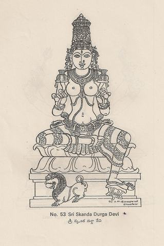

2Maha Kali Devi
Maha Kali Devi
Dhyāna śloka for this plate is not in the typed volumes yet; the diagram is shown alone.
Each form with its diagram plate, its dhyāna śloka and the Telugu meaning, as typed in the source volumes.
Dhyāna śloka for this plate is not in the typed volumes yet; the diagram is shown alone.
Dhyāna śloka for this plate is not in the typed volumes yet; the diagram is shown alone.
Dhyāna śloka for this plate is not in the typed volumes yet; the diagram is shown alone.
Dhyāna śloka for this plate is not in the typed volumes yet; the diagram is shown alone.
Dhyāna śloka for this plate is not in the typed volumes yet; the diagram is shown alone.
Dhyāna śloka for this plate is not in the typed volumes yet; the diagram is shown alone.
Dhyāna śloka for this plate is not in the typed volumes yet; the diagram is shown alone.
Dhyāna śloka for this plate is not in the typed volumes yet; the diagram is shown alone.
Dhyāna śloka for this plate is not in the typed volumes yet; the diagram is shown alone.
Dhyāna śloka for this plate is not in the typed volumes yet; the diagram is shown alone.
Dhyāna śloka for this plate is not in the typed volumes yet; the diagram is shown alone.
Dhyāna śloka for this plate is not in the typed volumes yet; the diagram is shown alone.
Dhyāna śloka for this plate is not in the typed volumes yet; the diagram is shown alone.
Dhyāna śloka for this plate is not in the typed volumes yet; the diagram is shown alone.
Dhyāna śloka for this plate is not in the typed volumes yet; the diagram is shown alone.
Dhyāna śloka for this plate is not in the typed volumes yet; the diagram is shown alone.
Dhyāna śloka for this plate is not in the typed volumes yet; the diagram is shown alone.
Dhyāna śloka for this plate is not in the typed volumes yet; the diagram is shown alone.
Dhyāna śloka for this plate is not in the typed volumes yet; the diagram is shown alone.
Dhyāna śloka for this plate is not in the typed volumes yet; the diagram is shown alone.
Dhyāna śloka for this plate is not in the typed volumes yet; the diagram is shown alone.
Dhyāna śloka for this plate is not in the typed volumes yet; the diagram is shown alone.
Dhyāna śloka for this plate is not in the typed volumes yet; the diagram is shown alone.
Dhyāna śloka for this plate is not in the typed volumes yet; the diagram is shown alone.
Dhyāna śloka for this plate is not in the typed volumes yet; the diagram is shown alone.
Dhyāna śloka for this plate is not in the typed volumes yet; the diagram is shown alone.
Dhyāna śloka for this plate is not in the typed volumes yet; the diagram is shown alone.
Dhyāna śloka for this plate is not in the typed volumes yet; the diagram is shown alone.
Dhyāna śloka for this plate is not in the typed volumes yet; the diagram is shown alone.
Dhyāna śloka for this plate is not in the typed volumes yet; the diagram is shown alone.
Dhyāna śloka for this plate is not in the typed volumes yet; the diagram is shown alone.
Dhyāna śloka for this plate is not in the typed volumes yet; the diagram is shown alone.
Dhyāna śloka for this plate is not in the typed volumes yet; the diagram is shown alone.
Dhyāna śloka for this plate is not in the typed volumes yet; the diagram is shown alone.
Dhyāna śloka for this plate is not in the typed volumes yet; the diagram is shown alone.
Dhyāna śloka for this plate is not in the typed volumes yet; the diagram is shown alone.
తాత్పర్యము శ్రీ మాహేశ్వరీదేవి వృషభమును అధిష్ఠించినదై ఐదు ముఖములతో, ప్రతి ముఖమునందు మూడు మూడు కన్నులతో, తెల్లని శరీరచ్ఛాయలతో, నెలవంక శిరోభూషణముతో నుండును. కుడివైపున క్రిందినుండి పైకి వరుసన ౧)అభయముద్రను ౨)గొడ్డలిని ౩)శూలమును ౪)వజ్రమును ౫)ఖడ్గమును అట్లే ఎడమవైపున ౧)వరదముద్రను ౨)అంకుశమును ౩)నాగమును ౪)ఘంటను ౫)పాశమును పదిచేతులయందు ధరించినదై యుండును.
తాత్పర్యము శ్రీ కౌమారీదేవి ఆరుముఖములతో, శ్వేతరక్తమైన పాటల శరీరచ్ఛాయలతో, ప్రసన్నమూర్తితో, మయూర వాహనముతో, పండ్రెండు బాహువులు కలదియైయుండును. కుడి భాగమునందు క్రిందినుండి పైకి వరుసన ౧)వరదముద్రను ౨)శక్తిని ౩)పతాకను ౪)దండమును ౫)పాత్రమును ౬)బాణమును అట్లే ఎడమ భాగమునందు ౧)అభయముద్రను ౨)గొడ్డలిని ౩)కుక్కుటమును ౪)కమలమును ౫)గంటను ౬)వింటిని పండ్రెండు హస్తములతో ధరించియుండును.
తాత్పర్యము శ్రీ వైష్ణవీదేవి గరుడవాహనముతో, శ్యామల (నల్లని) శరీరచ్ఛాయలతో వనమాలా భూషణములతో, ఆరు హస్తములు కలదియైయుండును. కుడిభాగమున క్రిందినుండి పైకి వరుసన ౧)వరదముద్రను ౨)గదను ౩)పద్మమును అట్లే ఎడమభాగమున ౧)అభయముద్రను ౨)చక్రమును ౩)శంఖమును ఆరు చేతులతో ధరించియుండును.
తాత్పర్యము శ్రీ వారాహీదేవి నల్లని శరీరకాంతులతో, వరాహముఖముతో, మహిషవాహనముతో, లావైన ఉదరముతో, ఆరు చేతులతో నుండును. కుడి భాగమునందు క్రిందినుండి పైకి వరుసన ౧)వరదముద్రను ౨)ఖడ్గమును ౩)దండమును అట్లే ఎడమవైపున ౧)అభయముద్రను ౨)ఖేటమును ౩)పాత్రమును ఆరుచేతులయందు ధరించియుండును.
తాత్పర్యము శ్రీ ఐంద్రీదేవి మిక్కిలి సౌమ్యురాలు. వేయికన్నులతో, బంగారువంటి పచ్చని శరీరకాంతులతో, ఏనుగు వాహనముతోనుండును. ఆమె ఆరు చేతులు కలది. కుడివైపున క్రిందినుండి పైకి వరుసన ౧)వరదముద్రను ౨)సూత్రమును ౩)వజ్రమును అట్లే ఎడమ వైపున ౧)అభయముద్రను ౨)పాత్రమును ౩)పద్మమును ధరించియుండును.
Dhyāna śloka for this plate is not in the typed volumes yet; the diagram is shown alone.
Dhyāna śloka for this plate is not in the typed volumes yet; the diagram is shown alone.

తాత్పర్యము బాల చంద్రుని శిరోభూషణముగా ధరించి ఎద్దును ఎక్కినదై శూలమును దాల్చిన కీర్తిమంతురాలగు శ్రీశైలపుత్రీదేవిని నా కోరికలు ఫలించుటకు గాను నమస్కరింతును.
తాత్పర్యము రెండ చేతులతో అక్షమాలను (జపమాల), కమండలువును ధరించి పరమోత్తమురాలవగు నో బ్రహ్మచారిణీదేవీ నాయందు అనుగ్రహము కలదానవు కమ్ము.

తాత్పర్యము గరుడవాహనమును ఎక్కినదై, ప్రచండమగు కోపముగల చండఖండ అను ప్రసిద్ధురాలగు దేవి నాయందు అనుగ్రహము కల దగునుగాక.

తాత్పర్యము ఎల్లప్పుడు సింహమును అధిష్ఠించినదై, రెండు చేతులయందు పద్మములను ధరించినదై, కుమారస్వామికి తల్లియైకీర్తిని బొందిన శ్రీ స్కందదుర్గాదేవి సదా శుభములను ఇచ్చునది అగుగాక.
Dhyāna śloka for this plate is not in the typed volumes yet; the diagram is shown alone.
Dhyāna śloka for this plate is not in the typed volumes yet; the diagram is shown alone.
తాత్పర్యము పద్మములతో కూడిన ప్రదేశమునందు స్వరూపమువలననే పూజింపదగిన తొమ్మండుగురు దుర్గాదేవతలు కలరు. ఆ తొమ్మిది మందిలో ఒక్కరికి లావైన స్తనములు, చేతులు, భుజములు, తొడలు కలది. ఈమె అన్ని నగలను ధరించునది. ఎల్ల సిద్ధులను ఈయగలదు.
ఈమెకు పదునెనిమిది చేతులుండును. వానితో కూడివైపున క్రిందినుండి పైకి వరుసన 1) పద్మమును 2)శలాకను 3)శూలమును 4)శంఖమును 5)వజ్రమును 6)చక్రమును 7)బాణమును 8)ముద్గరమును 9)శక్తిని, అట్లే ఎడమవైపున 1)తర్జనిని 2)జడను 3)పాశమును 4)ధ్వజమును 5)గంటను 6)అద్దమును 7)వింటిని 8)డాలును 9)డమరుకమును ధరించియుండును.
మిగిలిన యెనమండుగురు పదునారు హస్తములతో మాత్రముందురు. కనుక ఆయుధములతో బాణము, డమరుకము ఉండవు. జయమును కోరిన పండితులు ఈ తొమ్మండుగురు దుర్గాదేవతలను పూజింపవలెను.
1)రుద్ర 2)చండ 3)శచి 4)శైవ 5)చండి 6)క్రూర 7)అసుక్రూర 8)చండిక 9)ఉగ్రచండ అని వీరల పేరులు.
వరుసన 1)అగ్నివంటి రంగు 2) కాటుకవంటి రంగు (నలుపు) 3)కృష్ణము (నలుపు) 4)నీలము (నలుపు) 5) శుక్లము (తెలుపు) 6)ధూమము (పొగరంగు) 7)పసుపు 8)పాండరము (లేతఎరుపు) వీరి వర్ణమును.
తాత్పర్యము శూలమును ధరించిన పదునారు చేతులతో, మూడు కన్నులతో, పాముల దండలతో, పాముల కంకణములతో, పాముల నగలతో, నల్లని మెడతో, దిగంబరయైయున్న శ్రీ దుర్గాదేవికి నమస్కరింతును. (శ్యామవర్ణము)
తాత్పర్యము శ్రీ రుద్రాంశ దుర్గాదేవి ఎర్రని వస్త్రములతో, నల్లని శరీరముతో, రెండు కన్నులతో, రత్న కిరీటముతో, మణులు పొదిగిన బంగరు నగలతో కుడివైపున క్రిందినుండి పైకి 1)చక్రమును 2)శూలమును అట్లే ఎడమవైపున 1)శంఖమును 2)ఖడ్గమును ధరించును. సింహ వాహనమును అధిష్ఠించినదై సూర్యచంద్రులను అలంకరించుకొని, తన పాదములకు దేవతలు నమస్కరించుచుండ కోరిన కోరికలను ఇచ్చునట్టి శ్రీ రుద్రాంశ దుర్గాదేవిని నేను నా మనస్సునందు స్మరించుచున్నాను. (శ్యామలవర్ణము)
తాత్పర్యము మహాశరీరముతో ప్రశయకాలమునందలి మేఘములతో సమమగు నల్లని శరీర కాంతులతో తన ఎనిమిది చేతులయందు కుడివైపున క్రిందినుండి పైకి వరుసన 1)కుంభమును 2)వజ్రమును 3)అంకుశమును 4)చక్రమును అట్లే ఎడమవైపున 1)గదను 2)ముసలమును 3)పాశమును 4)శంఖమును ధరించిన శ్రీ మహా కాళీదేవి మాకు సంతోషమును కలిగించును గాక. (మేఘశ్యామవర్ణము)
తాత్పర్యము నాల్గు కుడిచేతులతో క్రిందినుండి పైకి క్రమమున కుడివైపున 1)తర్జనిని 2) కత్తిని 3) బాణమును 4)చక్రమును అట్లే ఎడమ చేతులతో క్రిందినుండి పైకి క్రమమున 1)శూలమును 2) ఖేటమును 3) వింటిని 4)శంఖమును ధరించి ఎనిమిది చేతులుకలదై, మహిష శిరమును ఎక్కినదై, లేత గడ్డితో సమమగు శరీరచ్ఛాయలుగల శ్రీ దుర్గాదేవి మాకు సంపదలను ఇచ్చుగాక. (హేమవర్ణము)
తాత్పర్యము శ్రీ ప్రత్యంగిర నల్లని శరీరకాంతులతో, మూడుకన్నులతో, సింహముయొక్క ముఖమువంటి ముఖము కలదై, కుడివైపున క్రిందినుండి పైకి 1)శూలమును 2)డమరుకమును అట్లే ఎడమవైపున 1)కపాలమును 2) నాగపాశమును ధరించిన నాల్గుచేతులతో నుండును.
బాలచంద్రుడు ఆభరణముగా గల ఊర్ధ్వమునకు వ్యాపించిన వెంట్రుకలతో సింహవాహనము నధిష్ఠించినదై శత్రువుల నెల్లరను సంహరించునట్టి ప్రత్యంగిరాదేవిని నిత్యము నేను భజించుచున్నాను. (శ్యామవర్ణము)
తాత్పర్యము శ్రీ శూలినీదేవి కుడిభాగమున క్రిందినుండి పైకి క్రమమున 1)శూలమును 2)కత్తిని 3)చక్రమును 4)బాణమును అట్లే ఎడమ భాగమున 1)పాశమును 2)గదను 3)శంఖమును 4)వింటిని ధరించి అష్టభుజయైయుండును.
మేఘమువలె, నల్లని శరీరకాంతులతో, కిరీటమునందు మెరయుచున్న మేఘములతో, వివిధ మణిమయ భూషణమునతో కూడినను భయంకరురాలై, సింహస్కంధమునధిష్ఠించి 1)కత్తి, 2)డాలు అను వానిని ధరించిన నల్వురు కన్యలచేత చుట్టబడి దానవులను మర్దించునట్టి శ్రీ శూలినీదేవి మా సంసార భయమును నాశనమును చేయునుగాక. (మేఘశ్యామ వర్ణము)
తాత్పర్యము శ్రీ ధూమ్రవతి ఎర్రని శరీరకాంతులతో, ఎర్రని వస్త్రములతో, ఏనుగు తొండములవలె ప్రకాశించు చెపులకుండలములతో, భయంకరములగు కోరలతో, కంఠమందు ధరింపబడిన కపాలమాలలతో, పరిసరప్రదేశము నందు (తనచుట్టు) గంతులువైచుచున్న (ఆడుచున్న) పిశాచముల గుంపులతో, భయమును కలగించు పెడబొబ్బనవ్వులతో నుండును.
కుడిచేతియందు కత్తిని, ఎడమచేతియందు కపాలమును ధరించి, మూడునేత్రములు కలిగి, బాలచంద్రరేఖగల కిరీటమును ధరించి శత్రువులను చంపు ధూమ్రకాళీదేవిని భావింపవలెను. (రక్తవర్ణము)
తాత్పర్యము పువ్వులబాణమును సంధించిన చెరకువింటితో, మజ్జగములను జయించుచు జపాపుష్పము వలె, ఎర్రని శరీరకాంతులతో నున్న శ్రీ వశ్యముఖీదేవిని నేను భజించుచున్నాను. (రక్తవర్ణము)
తాత్పర్యము ఉగ్రతారాదేవి ప్రత్యాలీడముద్రగల పాపములతో, త్రొక్కిపట్టిన శవముతో, భయంకరమైన అట్టహాసముకలగియై కుడివైపున క్రిందినుండి పైకి క్రమమున 1)శూలమును 2)శంఖమును నాల్గుచేతులయందు ధరించును. హుంకార బీజమునుండి ఉద్భవించినదై, పొట్టివి, మిక్కిలి నల్లనివి, కొన్నిపొడవైనవి, లేతపసుపురంగుగలవి (మరికొన్ని) అగు జడలతో ముడిచుట్టి, భయంకరమగు పాములను ధరించి, కపాలమందు మాంద్యమును ఉంచిన ఉగ్రతారాదేవి స్వయముగా మూడులోకములను మర్దించునదై యున్నది. (సిందూర వర్ణము)
తాత్పర్యము ఓ మునీ! కురుకుల్ల అని ప్రసిద్ధురాలైన నౌకేశ్వరీదేవి మణిమయమగు పడవను ఎక్కి ఉండును. ఆమె చీకటిమెట్టువలె నల్లని శరీరకాంతి కలిగియుండును. నల్లని కంచుకమును (రవికను) ధరించును.
ఈమె రెండు చేతులతో పడవను నడుపుటకు రత్నమయమైన తెడ్డును ధరించి గొప్పయౌవనమదముతో బలిసిన శరీరముగలిగి అంతటా తిరిగుచుండును. (నీలవర్ణము)
తాత్పర్యము సుధామాలిని యని, అమృతేశ్వరి యని కొనియాడబడుచున్న శ్రీ వారుణీదేవి ప్రత్యక్షముగా ఓడలకు అధినాయకురాలు. ఆమె మణిమయమగు నోడయందు నివసించుచు శక్తిసేనలతో చుట్టబడియుండును. ఆమె క్రీగంటితో చూచినమాత్రాన మూడు లోకములు సమ్మోహమును పొందును. లేతసూర్యునివలె ఎర్రనైన శరీరకాంతులతో, మదమువలన ఎర్రనైన చెక్కిళ్ళతో, పారిజాతవృక్షముల పూలదండలతో నలంకరింప బడిన జుట్టుముడితో నుండును.
కుడివైపున క్రిందినుండి పైకి 1)కదలుచున్న నల్లకలువను 2)వండిన మాంసఖండముతో నింపబడిన మణిపాత్రమును నాల్గు చేతులయందు ధరించి వారుణికి, (మద్యమునకు) నౌకాసమూహములకు నాయికయై శ్రీ వారుణీదేవి ప్రకాశించుచున్నది. (రక్తవర్ణము)
తాత్పర్యము నల్లకలువవంటి శరీరకాంతి, నిద్రచేత మూయబడిన కన్నులు, నల్లనివి, వంకరలుగల వెంట్రుకలు, లోతైన పొక్కిలి (బొడ్డు), మూడు మడతలుగల పొట్ట, పచ్చని వస్త్రములు, మణిమయ సువర్ణభూషణములు, చక్కని పూల మాలలు, కలిగి అపరాజితా దేవి ప్రకాశించుచుండును.
ఈమె భక్తుల బాధలను తొలగించును. శక్తిరూపముతో నుండును. సాధురూపమున సౌమ్యభావముతో నున్నను శత్రుసైన్యములను నశింపజేయును.
కుడిభాగమున క్రిందినుండి పైకి 1)అభయముద్రను 2)చక్రమును అట్లే ఎడమవైపున 1)గదను 2)శంఖమును నాల్గుచేతులయందు ధరించును. మూడుకన్నులతో నుండును. ఎల్ల కోరికలను ఇచ్చును. కావున నీ అపరాజితాదేవిని ధ్యానింపవలెను.
తాత్పర్యము శ్రీ శత్రువిధ్వంసినీదేవి భయంకరమగు రూపముతో, మూడు శిరములతో, ఎర్రనగు మూడు మూడు కన్నులతో, అగ్నిజ్వాలలతో, భయంకరములగు కోరలతో, ఎర్రని వెంట్రుకలు, చేతులు కలిగి, లావైన ఉదరము కలిగి, దిగంబరురాలై ఉండును.
ఈ భయందరములగు లక్షణములచేత ఈమె శత్రువులను వెంటనే నశింపజేయును. (నీల వర్ణము)

తాత్పర్యము ఎర్రని శరీరచ్ఛాయలుకల శ్రీస్వస్థావేశినీదేవి శవములను వస్త్రములుగా ధరించును. మూడు శిరములతో, రౌద్రరూపముతో, నీలలోహితములైన (నలుపు ఎరుపు కలసిన రంగుతోనున్న) కన్నులతో, గొప్పజుట్టు, నల్లని ముంగురుల మూడుజడలతో, కుడివైపున ఢక్కను, ఎడమవైపున శూలమును, ధరించిన రెండు చేతులతో నుండును.
సన్ననిదైనను భయంకరమగు శరీరముతో, దావాగ్నిజ్వాలలతో, మహాభైరవియై గొప్పబలముగల శత్రువుల నెల్లరను చంపగల శక్తికలదై పినాక మను ఆయుధముతో లోకములను జయించు రుద్రునిచే గూడ ప్రశంసింపబడుచున్న శ్రీస్వస్థావేశినీదేవిని ధ్యానింతును. (రక్తవర్ణము)
తాత్పర్యము నూరుస్తంభములు కలిగిన మంటపమధ్యభాగమునందు బంగారుపద్మముండును. దాని కర్ణికల నడుమ రెండు వృత్తములుండును. వాని నడుమ ఆరుదశములు, వానినడుమ బిందు వుండును. ఇది బిందుత్రికోణవృత్తము కలది. షడ్దళము. వృత్త యుగ్మము. ఇట్టి చక్రము ఉండును.
అట్టి చక్రమునందు మేలిమిబంగరువంటి శరీరచ్ఛాయలతో సంధ్యాకాంతులవలె ఎర్రనైన వస్త్రములతో, మణిమయములగు బంగారునగలతో, కుడిభాగమున క్రిందినుండి పైకి క్రమమున 1)అభయముద్రను 2)అంకుశమును 3)నాగలిని 4)చక్రమును అట్లే ఎడమభాగమున 1)వరదముద్రను 2)పాశమును 3) రోకలిని 4)శంఖమును ధరించిన ఎనిమిది చేతులతో, బాలచంద్రుని శిరోభూషణముగా ధరించి వరాహముఖము కలిగిన దండిని యగు శ్రీ దండనాథాదేవి ప్రకాశించును. (కనకవర్ణము)

తాత్పర్యము శ్రీ స్వప్నవారాహి మేఘమువలె నల్లనగు శరీరచ్ఛాయలతో, చక్కని స్తనభారముతో, మూడు కన్నులతో, వరాహముఖముతో, నెలవంక శిరోభూషణముతో, ప్రకాశించుచున్న కోరలకాంతులతో నుండును.
రెండు కుడిచేతులయందు క్రిందినుండి పైకి 1)కత్తిని 2)అంకుశమును అట్లే ఎడమవైపున 1)ఖేటమును 2)పాశమును ధరించి చతుర్బాహువై గుర్రమును అధిష్ఠించి శుభాలంకారములుకల శ్రీ స్వప్నవారాహీదేవిని దినదినము ధ్యానింపవలెను. (మేఘశ్యామవర్ణము)
తాత్పర్యము ప్రకాశించు కోరలుగల వరాహవదనముతో, ఎర్రని వస్త్రములతో, కుడివైపున క్రిందినుండి పైకి 1)శూలమును 2)ముసలమును అట్లే ఎడమవైపున 1)కపాలమును 2)నాగమును ధరించి చతుర్బాహువై చందురుని రేఖను శిరోభూషణముగా నలంకరించిన శ్రీవారాహీదేవిని నేను భజించుచున్నాను. (నీలవర్ణము)
తాత్పర్యము ప్రథమరజస్వలయైనదియు కనుకనే రక్తబిందువుల చేత ఎర్రనగు వస్త్రములు కలిగి, మధుకలశమును చేత ధరించి, మదమత్తురాలగటచేత తిరుగుచున్న కన్నులతో, శంఖముల పొదిగిన కర్ణాభరణములతో, వీణను మ్రోగించుచు గొప్ప స్తనభారముచేత అలసురాలగు, జారిన కేశపాశములుగల శ్రీ శ్యామలాదేవిని స్మరింపవలెను. (శ్యామవర్ణము)
తాత్పర్యము రత్నములు పొదిగిన సింహాసనమునందు నల్లని శరీరకాంతితో, ఒకపాదమును తామర పూవునందు మోపి, శిరోభూషముగా చంద్రుని ధరించి, తిలకమునుబెట్టి, సౌగంధిక పుష్పములతో కేశపాశము(జడను) నలంకరించి, ఎర్రని వస్త్రములతో, వివిధమణిమయభూషణములతో, లీలాశుకముయొక్క (పెంపుడు చిలుకయొక్క) ముద్దుపల్కులను వినుచు, వీణను మ్రోగించుచున్న శ్రీ రాజమాతంగీదేవిని నేను నమస్కరించుచున్నాను. (శ్యామవర్ణము)
తాత్పర్యము శ్రీ బాలికాదేవి జపాపుష్పమువలె ఎర్రనైన శరీరచ్ఛాయలతో, వికసించిన పద్మమునందు కూర్చుండి కుడివైపున క్రిందినుండి పైకి క్రమమున 1)అభయముద్రను 2)జపమాలను అట్లే ఎడమవైపున 1)వరదముద్రను 2)పుస్తకమును ధరించి ఒప్పారుచుండును. (రక్తవర్ణము)
తాత్పర్యము శ్రీ భువనేశ్వరీదేవి ఉదయించుచున్న సూర్యునితో సమమగు శరీరకాంతులు కలిగి, కనకనే అప్పుడే విప్పారిన జపాపుష్పములను జయించినదియై, శిరోభూషణమైన చంద్రరేఖతో, నక్షత్రముల హారములతో, మూడు కన్నులతో, వివిధ మణిరత్నములు పొదిగిన బంగరు చెవిపోగులతో, హారములతో (రొమ్మున వ్రేలాడునవి) గ్రైవేయములతో, (మెడను హత్తుకొని ఉండునవి) కాంచీగుణముతో, (నడుమునందుండునది ఒడ్డాణము) మణివలయములతో, (మణికట్టునందుండు కంకణములు గాజులు) చక్కని వస్త్రములతో నుండును. కుడివైపున క్రిందినుండి పైకి 1)వరముద్రను 2)పాశమును ధరించి చతుర్బాహువులతో, పద్మాసనమునందు ఉపవిష్టురాలయి (కూర్చుండి) ఎల్లదేవతలయందు ప్రప్రథమదేవతయగు శ్రీ భువనేశ్వరీదేవిని మానసమునందు భావింపవలయును. (రక్తవర్ణము)
తాత్పర్యము ప్రసన్నమైన రూపముతో కుడివైపున క్రిందినుండి పైకి 1)అభయముద్రను 2)అంకుశమును 3)ఖడ్గమును 4)శూలమును అట్లే ఎడమవైపున 1)వరదముద్రను 2)పాశమును 3)గదను 4)నాగమును ధరించిన ఎనిమిది చేతులతో, వికసించిన పద్మమునందున్న శుభురాలగు శ్రీ మృతసంజీవినీదేవిని నమస్కరింతును. (రక్తవర్ణము)
తాత్పర్యము కుడివైపున క్రిందినుండి పైకి 1)త్రిశూలమును 2)జిహ్వను అట్లే ఎడమవైపున 1)పానపాత్రమును 2)గదను ధరించిన చతుర్బాహువుల తో, మూడు కన్నులతో, దొండపండువంటి క్రింది పెదవితో, శంఖమువలె చారలుగల సుందరమగు కంఠముతో, సమపీనోన్నతమగు చక్కని స్తనమండలముతో, పచ్చని బంగారు రంగుగల వస్త్రములతో, పద్మము నందు ఉపవిష్టురాలయి యౌవనాతిశయము చేత అలసురాలగు బ్రహ్మాస్త్రదేవి శ్రీ బగలాదేవిని ధ్యానింపవలెను. (పీతవర్ణము)
తాత్పర్యము శ్రీ ప్రాణశక్తి రక్తసముద్రమునందలి పడవయందు విప్పారిన ఎర్రతామర పూవును అధిష్ఠిచినదై కుడివైపున క్రిందినుండి పైకి 1)అంకుశమును 2)ఐదుబాణములను అట్లే ఎడమవైపున 1)పాశమును 2)తుమ్మెదలు నారిగాగల చెరకువింటిని నాల్గు చేతులయందు ధరించియుండును.
రక్తకపాలముల దండలతో, మూడు కన్నులతో, సమపీనోన్నతములైన స్తనములతో, లేత సూర్యునివలె ఎర్రనైన శరీరచ్ఛాయలతో, పరాదేవతయగు శ్రీ ప్రాణశక్తి మాకు సుఖమును కలిగించుగాక. (రక్తవర్ణము)
తాత్పర్యము కుడివైపున క్రిందినుండి పైకి 1)అభయముద్రను 2)జ్ఞానముద్రను అట్లే ఎడమవైపున 1)జపమాలను 2)పుస్తకమును ధరించి చతుర్బాహువులతో, స్ఫటికమువలె తెల్లని విగ్రహము (మూర్తి)తో నున్న శ్రీ శుద్ధవిద్యాదేవి మమ్ములనెల్లప్పుడు రక్షించుగాక. (శ్వేతవర్ణం)
తాత్పర్యము ముజ్జగములకు ఆధారమైనదానా, లేత సూర్యబింబమువలె ప్రకాశించు మొగముకలదానా, మిక్కిలి భయంకరమగు కోరలుగలదానా, వీణను మ్రోగించుదానా, మహా భోగములకు తావేనదానా, వీణ మున్నగువాని గానమునందభిరుచి కలదానా, వివిధాక్షరముల రూపమైనదానా, మనుష్యకపాలమును ధరించినదానా, ప్రసిద్ధములైన పూమాలలను ధరించినదానా, గొప్ప ప్రయోజనములను ఇచ్చుటచేత మహితురాలా, శ్రీవిద్యవగు శాంకరీదేవీ, నీకు నమస్కారము. (చిత్రవర్ణము)
తాత్పర్యము కుడిభాగమున వరుసన క్రిందినుండి పైకి 1)అభయముద్రను 2)వరికంకిని 3)పద్మమును 4)పంచ (పుష్ప) బాణములను అట్లే ఎడమవైపున 1)వరముద్రను 2)పాశమును 3)మోదుగ పువ్వును 4)చెరకువింటిని ధరించి అష్టబాహువైన శ్రీకళాధరయగు అంబకు నమస్కరింతును. (రక్తవర్ణము)
తాత్పర్యము శ్రీ వనశంకరీదేవి కుడివైపన క్రిందినుండి పైకి వరుసన 1)అభయముద్రను 2)శూలమను 3)పరిఘమును 4)చక్రమును 5)శరమును అట్లే ఎడమవైపున 1)వరముద్రను 2)కపాలమును 3)గదను 4)శంఖమును 5)వింటిని ధరించి పది చేతులతో నుండును.
చంద్రరేఖాలంకారముగల కిరీటముతో, మణిమయములైన వస్త్రములతో, మూడు కన్నులతో, ప్రళయకాలమందలి అగ్నిచ్ఛాయలవలె ప్రకాశించు శరీరకాంతులతో, బ్రహ్మ, విష్ణువు మున్నగు దేవతలచేత స్తుతింపబడుచున్న శ్రీ వనశంకరీదేవికి నేను నమస్కతించుచున్నాను. (రక్తవర్మము)
తాత్పర్యము శ్రీ శాకంభరీదేవి కుడిభాగమున క్రిందినుండి పైకి వరుసన 1)అభయముద్రను 2)శూలమును 3)నాగమును 4)కులిశమును 5)ఖడ్గమును 6)అంకుశమును 7)బాణమును 8)చక్రమును అట్లే ఎడమవైపున 1)కపాలమును 2)దండమును 3)గదను 4)ఖట్వాంగమును 5)ఖేటమును 6)పాశమును 7)వింటిని 8)శంఖమును పదునారు చేతులతో ధరించి యుండును.
అనావృష్టివలన (వర్షము లేకపోవుటచేత) మరణించిన మునిసమూహములను, పంటలచేత, పైరులచేత రక్షించిన, మూడు లోకములకు తల్లియగు, మహేశ్వరునకు ప్రియురాలగు శ్రీ శాకంభరీదేవిని స్తోత్రముచేయుచున్నాను. (రక్తవర్ణము)
తాత్పర్యము దేవతలు, దానవులు ఒకప్పుడు పాలసముద్రమును చిలికిరి. అప్పుడాసముద్రమునుండి కన్యకారూపముతో సురాదేవీ పుట్టినది. ఆమెకు పదునెనిమిది చేతులు. కుడివైపున క్రిందినుండి పైకి వరుసన 1)అభయముద్రను 2)భిండివాలమును 3)లోహమను నాయుధమును 4)తోమరమును 5)ఖేటమును 6)శూలమును 7)బాణమును 8)ముష్టిని 9)చక్రమును అట్లే ఎడమవైపున 1)వరముద్రను 2)ఘంటను 3)గదను 4)శక్తిని 5)ఖడ్గమును 6)కపాలమును 7)వింటిని 8)రోకటిని 9)శంఖమును పదునెనిమిది చేతులతో, ధరించును.
ఎర్రని కొనలుగల విశాలములగు మూడు కన్నులతో, పొడవగు సన్నని సుందరమగు శరీరముతో, పాలసముద్రమును చిలుకుచున్న మందరపర్వతమును చుట్టుముట్టి నురుగులతో, తరంగములతో, సుడులతో భయంకరమై, ఆవుల మూత్రమువలె కొన్ని తావుల, ఆవుపాలవలె కొన్నితావుల, నల్లనిరూపముతో రాక్షసులను భయపెట్టుచు దేవతలకు అభయమునిచ్చుచున్న పరాదేవతయగు నా సుర కేవలము ఉమాదేవియే. అట్లు మిక్కిలి సౌందర్యరాశియగు నా సురాదేవిని చూచి మహేశ్వరుడుకూడా మోహపడెను. (చిత్రవర్ణము)
తాత్పర్యము శ్రీ చతుష్షష్టికళాదేవి కుడిభాగమున క్రిందినుండి పైకి వరుసన 1)అమృతకలశమును 2)అక్షమాలను 3)ఉలిని 4)పాశమును 5)చక్రమును అట్లే ఎడమవైపున 1)వరముద్రను 2)పుస్తకమును 3)లేడిని 4)తెల్లని కపాలమును 5)పద్మమును పదిచేతులయందు ధరించును. ముత్యమువలె కొంచెము తెల్లనై, మెరుపుతీగ వలె పచ్చనై, మేఘమువలె నల్లనై, స్ఫటికమువలె మిక్కిలి తెల్లనై, జపాపుష్పమువలె ఎర్రనైన ఐదు మొగములతో, మూడు కన్నులతో, స్తనభారముచేత కొలదిగ వంగి పున్నమచంద్రునివంటి మిక్కిలి తెల్లనైన శరీరకాంతులతో అరువదినాల్గు కళలకు అధిష్ఠాత్రియగు నా శారదాదేవిని నమస్కరించుచున్నాను. (శుభ్రవర్ణము)
తాత్పర్యము కుడిభాగమున క్రిందినుండి పైకి 1)విద్యాముద్రను 2)జపమాలను అట్లే ఎడమభాగమున 1)పదునైన ఉలిని 2) లేడిపిల్లను ధరించిన నాల్గు చేతులతో, మూడుకన్నులతో, శిరమున నెలవంక (బాలచంద్రుడు) భూషణముతో, ఎర్రని శరీరకాంతితో, ఎర్రతామరపూవువంటి వస్త్రములతో, స్తనభారముచేత కొంచెము వంగిన శరీరముగల శ్రీ వర్ణేశ్వరీ దేవిని మీరెల్లరు నమస్కరింపుడు. (అరుణవర్ణము)
తాత్పర్యము శ్రీ ద్వాదశార్థదేవి కుడిభాగమున క్రిందినుండి పైకి 1)అభయముద్రను 2)త్రిశూలమును 3)అంకుశమును 4)అక్షమాలను 5)పుష్పబాణమును అట్లే ఎడమభాగమున 1)వరముద్రను 2)కపాలమును 3)పాశమును 4)పుస్తకమును 5)చెరుకువింటిని ధరించును. అట్లు పదిచేతులతో, ఐదు మొగములతో, ప్రతి ముఖమునందు మూడు మూడు కన్నులతో, ఎర్రని శరీరకాంతులతో, ఎర్రని తామరపూల దండను, తెల్లని చంద్రరేఖను ధరించిన శిరముతో, శవములయందు నివసించుచున్న శ్రీ ద్వాదశార్ధదేవికి నేను నమస్కరించుచున్నాను. (రక్తవర్ణము)
తాత్పర్యము నల్లని శరీరకాంతులతో నల్లని గుర్రమును ఎక్కి, ఖడ్గమును ధరించి, సకల జగములను నిద్రచేత కన్నులు మూయువానినిగా చేయుచు, తన ప్రభావముచేత జనులనెల్లరను నిద్రించువారలనుగా చేయుచున్న శ్రీ తిరస్కరిణీదేవి ఎల్లరను రక్షించుగాక. (నీలవర్ణము)
తాత్పర్యము కుడిచేతియందు బంగరుబెత్తమును, ఎడమచేతియందు కళ్ళెమును ధరించి భక్తులకు సులభురాలై, ఎల్లప్పుడు అనుగ్రహము కలిగి చంద్రరేఖ ప్రకాశించు జుట్టు ముడితో, మూడు కన్నులతో, పూజ్యురాలగు అశ్వారూఢాదేవి (గుర్రమును ఎక్కిన) ఎల్ల సుఖములతో కూడిన సంపదలను మాకు ఇచ్చుగాక. (రక్తవర్ణము)
తాత్పర్యము ఎడమవైపున వజ్రమును, కుడివైపున వరముద్రను ధరించిన రెండుచేతులుకలదై. పచ్చనగు చీరను, ఉత్తరీయమును ధరించి, వివిధములైన భూషణములను అలంకరించుకొని, పడుచుదనమున నున్న చెలిమికత్తెలతో, అప్సరః స్త్రీలతో సేవింపబడుచున్న ఇంద్రాక్షీదేవిని నేను నమస్కరించుచున్నాను. (పీతవర్ణము)
తాత్పర్యము ఎర్రని శరీరకాంతులతో, శుభములనిచ్చు వస్త్రములతో, సంతోషమునిండిన మొగముతో, మంచిముత్తెముల దండలతో, స్తనభారముచే కలిగిన మెల్లని నడకలతో, అందమైన బంగరు వడ్డాణముతో, ఎడమచేతియందు నాల్గువిధములగు అన్నములుకల బంగారు కలశముతో, కుడిచేతియందు కాడతోకూడిన తామర పూవువంటి గరిటతో, మూడు కన్నులతో, మేఘము వలె నల్లనైన ముంగరులతో, సుందరమూర్తియగు శంకరుని ప్రియురాలు శ్రీ భవానీదేవిని ధ్యానింపవలెను. (రక్తవర్ణము)
తాత్పర్యము ఎడమ చేతియందు ప్రకాశించుచున్న తామరపూవుతో, పద్మములవంటి కన్నులతో, చిరునవ్వు మొగముతో, దేవతలెల్లరు స్తుతించుచుండ సుగంధములచేత (తన పరిమళముచేత) తుమ్మెద గుంపులను సంతసపరచుచు కుడి చేతితో ఖడ్గమును ధరించుటచేత భయంకరురాలై, అంచల నడకలతో, తామర పూవుల దండలను ధరించి యోగులు గానము చేయుచుండ సుందరమూర్తియగు శ్రీ చంద్రాపరమేశ్వరి నా హృదయమందు నివసించునుగాక. దివ్యసింహాసనమునందు బంగారువంటి శరీరకాంతులతో వరములనిచ్చునట్టి శ్రీ చంద్రాపరమేశ్వరీ దేవిని ధ్యానింపవలెను. (శ్యామవర్ణము)
తాత్పర్యము శ్రీ తులసీదేవి కుడిభాగమున క్రిందినుండి పైకి 1)అభయముద్రను 2)పద్మమును అట్లే ఎడమవైపున 1)వరముద్రను 2)ఎర్రకలువపూవును ధరించును. నల్లని శరీరకాంతులతో, పద్మమువంటి కన్నులతో, కిరీటము, హారములు(మెడలోనివి) కేయూరములు (దండగడియములు) కుండలములు (చెవుల పోగులు) మున్నగు భూషణములతో, తెల్లని వస్త్రములతో, తామరపువ్వును అధిష్ఠించియున్న శ్రీ తులసీదేవిని ధ్యానింపవలెను. (శ్యామవర్ణము)
తాత్పర్యము పూర్వాహ్ణామునందు (ఉదయము) గాయత్రి అను పేరుతో, వ్యవహరింపబడుచున్న ఈ దేవి అగ్నివలె ఎర్రగనుండును. ఎర్రని వస్త్రములను ధరించినట్టి ఈ కుమారి ఎర్రని దండలతో, ఎర్రని మైపూతతో నుండును. నాలుగు చేతులు, నాలుగు మొగములు, ఎనిమిది కన్నులు కలది. కుడివైపున క్రిందినుండి పైకి 1)పద్మాక్షమాల (జపమాల)ను 2)స్రువమును అట్లే ఎడమవైపున 1)అభయముద్రను 2)కమండలువును నాల్గుచేతులయందు ధరించి పద్మపీఠమునందు కూర్చుండును.
ఋగ్వేదరూపిణియై ప్రాతస్సవనము (యజ్ఞము) కలిగి హంసవాహనముతోనుండును. ఈమె రసాయనరూపిణియగు గొప్ప దేవత. మూడగ్నులలో నీమె గార్హపత్యమను అగ్నియందు ప్రతిష్ఠింపబడినది. (రక్తవర్ణము)
తాత్పర్యము మధ్యాహ్నమునందు సావిత్రి యను పేరుతో వ్యవహరింపబడుచున్న ఈ దేవి రుద్రరూపముతో యువతియైయుండును. తెల్లని వస్త్రములతో, తెల్లనిదండలతో, తెల్లని మైపూతతో, నాల్గు చేతులతో, నాల్గు ముఖములతో, పండ్రెండు కన్నులతోనుండును.
కుడివైపున క్రిందినుండి పైకి 1)త్రిశూలమును 2)రుద్రాక్షలదండను అట్లే ఎడమవైపున 1)అభయముద్రను 2)ఖట్వాంగమును ధరించును.
ఈమె బంగారు పీఠమునందు యజుర్వేదరూపముతో, బాలచంద్రుని శిరమున ధరించి, మధ్యందినమను సవనము కలదియై వృషభవాహనము నధిష్ఠించి యుండును. మూడగ్నులలో నీమె దక్షిణాగ్నిస్వరూపము కలది. పవిద్రమైన బుద్ధికలవారలు ఈ సావిత్రీదేవిని ధ్యానింపవలయును.
తాత్పర్యము సాయంసంధ్యయందు (సాయంకాలమున) సరస్వతీనామముతో వ్యవహరింపబడుచున్న ఈమె విష్ణురూపము కలది. నల్లకలువవంటి శరీరకాంతితో, వంకరతిరిగిన నల్లని వెంట్రుకలతో, నాల్గు చేతులతో, ఒక్క మొగముతో, తామరపూరేకులవలె విశాలమగు రెండు పెద్ద కన్నులతో నుండును. ఈమె కుడివైపున క్రిందినుండి పైకి 1)అభయముద్రను 2)చక్రమును అట్లే ఎడమవైపున 1)గదను 2)శంఖమును నాల్గు చేతులతో ధరించును.
పచ్చని బంగారువంటి వస్త్రములను గట్టి, దివ్యములగు దండలను, మైపూతలను ధరించుచు, సౌమ్యమగు నల్లని పీఠమునందు కూర్చుండి సామవేదస్వరూపముతో, గరుడవాహనముతో, మూడవ సవనము కలిగి, మూడగ్నులలో ఆవాహనీయమను అగ్నియందుండు శ్రీ సరస్వతీదేవిని ధ్యానింపవలెను. (శ్యామవర్ణము)
తాత్పర్యము ఆరు రుచులు కలిగిన నాల్గు విధములైన అన్నపులతో నిండిన మాణిక్య పాత్రమును ఎడమచేతను, రత్నములు పొదిగిన బంగరు కంకణములు గల కుడిచేత గరిటను ధరించి ఎర్రని శరీరకాంతులతో, సమపీనోన్నతములైన స్తనములయందు ప్రకాశించు ముత్యాలహారములతో, మూడు కన్నులతో, నిండుచందురుని వంటి మొగముతో నున్న, జగన్మాతయగు అన్నపూర్ణాదేవిని నేను నమస్కరింతును. (రక్తవర్ణము)
తాత్పర్యము ఈ అన్నపూర్ణాదేవి కుడిభాగమున క్రిందినుండి పైకి 1)అభయముద్రను 2)అంకుశమును అట్లే ఎడమభాగమున 1)వరముద్రను 2)పాశమును ధరించి చతుర్బాహువులతో నుండును.
సిందూరమువలె ఎర్రనగు శరీరచ్ఛాయలతో, మూడు కన్నులతో, శిరోభూషణముగా ధరించిన అమృతమయుడగు చంద్రుంని కళతో, క్రొత్త యౌవనముయొక్క ప్రారంభముతో, వివిధములగు భూషణములతో, పద్మములవంటి కన్నులతో, ఖేచరి (ఆకాశమునందు తిరుగునది) అగుటచేత చంద్రుని కలిసికొనిన విగ్రహముతో నొప్పారచన్న అన్నపూర్ణాదేవిని నేను నమస్కరించుచున్నాను. (సిందూరవర్ణము)
తాత్పర్యము ఈ అగ్నిదుర్గాదేవి కుడివైపున క్రిందినుండి పైకి వరుసన 1)తర్జనిని 2)చక్రమును 3)కత్తిని 4)బాణమును అట్లే ఎడమభాగమున 1)వరముద్రను 2)అంకుశమును 3)ఖేటమును 4)వింటిని ధరించిన ఎనిమిదిచేతులతో నుండును. మెరుపుతీగతో సమానమగు శరీరకాంతులతో, సింహవాహనముతో, కనుకనే భయంకరురాలై, కుడి ఎడమల రెండుచేతులతో కత్తిని, ఖేటమును ధరించిన కన్యాజనముతో, సేవింపబడుచు, చంద్రరేఖను ధరించిన శిరముతో, మూడు కన్నులతో నుండిన అగ్నికి అధిష్ఠానదేవతయగు శ్రీ దుర్గాదేవిని భజించుచున్నాను. (కనకవర్ణము)
తాత్పర్యము దిగంబరయై (వస్త్రములులేనిది) రాసభమును గాడిదను ఎక్కి, కుడిచేతితో చీపురును ఎడమచేతితో నీటిచెంబును ధరించి శిరమునందు అలంకరింపబడిన చేటలతో నున్న శ్రీ శీతలాదేవిని భక్తులు ధ్యానింపవలెను. (కృష్ణవర్ణము)
తాత్పర్యము కుడిభాగమున క్రిందినుండి పైకి 1)బాణమును 2)అంకుశమును అట్లే ఎడమ భాగమున 1)వింటిని 2)పాశమును ధరించిన నాల్గు చేతులతో, మూడు కన్నులతో, సూర్యునివలె ప్రకాశించుచున్న శరీరచ్ఛాయలతో, శిరమునందు చంద్రరేఖతో, నున్న శుభములనిచ్చు శ్రీ లోపాముద్రా దేవిని నేను భజింతును. (సిదూరవర్ణము)
తాత్పర్యము ఓ రాజా! రెండు చేతులయందు పద్మములున్న, మిక్కిలి దివ్యరూపము గల, ఎల్లనగలచేత అలంకరింపబడిన ద్విభుజయగు లక్ష్మిని విష్ణుని విగ్రహముయొక్క సమీప ప్రదేశమునందు ప్రతిష్ఠింపవలెను. (హేమవర్ణము)
తాత్పర్యము ఒక చక్కని సింహాసనమును నిర్మించి దానియందు ఎనిమిది దళములుగల చక్కగ కర్ణికలతో నున్న తామరపూవును నిర్మింపవలెను. సాటిలేని రూపముగల లక్ష్మీదేవిని తెల్లని వస్త్రములతో, నాలుగు చేతులతో నిర్మింపవలెను. ఆమె ఆ పద్మమునందు వినాయకునివలె కూర్చుండవలెను. ఆమె నిజహస్తములలో కుడిచేతియందు పెద్దకాడగల పద్మమును నిర్మింపవలెను. ఆ పద్మము ఆ కుడిచేతి దండగడియము వరకు ఉండవలెను. ఆమె ఎడమచేతియందు అందమైన అమృతకలశమును నిర్మింపవలయును. మారేడు పండును, శంఖమును ధరించినట్లు వరహస్తములను నిర్మింపవలెను.
ఆ దేవీవిగ్రహము వెనుక రెండు ఏనుగులను నిర్మింపవలయును. ఆ ఏనుగుల తొండములు కొంచెము వంగి ఉండవలెను. ఆ రెండు ఏనుగులు తమతొడములతో ఒక తామరపూవును ఆ దేవి శిరమునందు ఉన్నట్లు పట్టుకొనవలయును. (స్వర్ణవర్ణము)
తాత్పర్యము కొల్లాపురమను తావున తప్ప తక్కిన తావులయందు మహాలక్ష్మీ నిర్మాణము చేయదలచినచో ఈ క్రింది విధముగా ఆ విగ్రహముండవలయును.
పూర్వము చెప్పిన విధముగా అన్ని భూషణములతో, అలంకరింపబడినదై విగ్రహముండవలెను. క్రింది కుడిచేతియందు పాత్రము, పై కుడిచేతియందు కౌమోదకి అను గద ఉండవలెను. పై ఎడమచేతియందు ఖేటము, క్రింది యెడమచేతియందు మారేడు పండు ఉండవలెను. ఆ దేవీవిగ్రహము శిరమునందు ఒక లింగమును నిర్మింపవలెను. ఈ రూపముతో నున్న ఆ శ్రీమహాలక్ష్మిని సంపదలు కోరిన వారలు పూజింపవచ్చును. (స్వర్ణవర్ణము)

తాత్పర్యము ఈ శ్రీదేవికి కుడిభాగమున క్రిందినుండి పైకి వరుసన 1)జపమాలను 2)అంకుశమును అట్లే ఎడమవైపున 1)పద్మమును 2)పాశమును ధరించినట్లు నాల్గుచేతులు ఉండవలెను. మూడు లోకములకు తల్లియగు లక్ష్మీదేవిని పద్మాసనమునందు ఉన్నట్లు నిర్మింపవలెను. (సువర్ణవర్ణము)
తాత్పర్యము శ్రీ వీరలక్ష్మీదేవి నిజహస్తములలో ఎడమచేతియందు వరముద్రను, కుడిచేతియందు అభయముద్రను పరహస్తములు రెండింటియందు పద్మములను ధరించి పద్మాసనమునందు ఉండును. (సువర్ణవర్ణము)
తాత్పర్యము ఈమె ద్విభుజ (రెండుచేతులుకలది). కుడిచేతియందు అభయముద్రను, ఎడమచేతియందు వరముద్రను ధరించును. ఊరువులు (తొడలు) పద్మదళములవలె నుండవలెను. కనుక ఈ ద్విభుజ యగు శ్రీ వీరలక్ష్మీదేవి వీరాసనమునందుండును. (హేమవర్ణము)
తాత్పర్యము క్రిందినుండి పైకి కుడివైపున వరుసన 1)అభయముద్రను 2)అక్షసూత్రమును 3) పద్మమును 4)అంకుశమును అట్లే ఎడమవైపున క్రమమున 1)వరముద్రను 2)పాత్రమును 3)గదను 4)పాశమును ఎనిమిది చేతులతో ధరించి అష్టభుజ వీరలక్ష్మ ఉండును. (హేమవర్ణము)
తాత్పర్యము శ్రీ ప్రసన్నలక్ష్మీదేవి శ్రీ మహావిష్ణుని యెడమతొడయందు కూర్చుండును. నిజహస్తములు రెంటియందు కుడియెడమల దానిమ్మపండును, బంగరు కలశమును (పాత్రమును) పరహస్తములు రెంటియందు బంగారు పద్మములను ధరించును. ఈమె పరమశివుని తేజోరూపమైనది. మేలిమి బంగారువంటి శరీరచ్ఛాయలతో, బంగారువర్ణమగు పచ్చని వస్త్రములతో, అవయవము లన్నింటియందు అలంకరింపబడిన మణిమయములగు బంగారు నగలతో నొప్పారును. ఇట్టి సకల లోకములకు తల్లియగు మొదటి శక్తియగు శ్రీ ప్రసన్నలక్ష్మిని నేను నమస్కరింతును.
తాత్పర్యము శ్రీ విష్ణువుయొక్క పరివారదేవతలు ఎనమండుగురు. వీరు ఆ స్వామిని పరివేష్టించుకొని యుందురు. 1)శ్రీదేవి, 2)భూదేవి 3)సరస్వతీదేవి 4)ప్రీతిదేవి 5)కీర్తిదేవి 6)శాంతిదేవి 7)తుష్టిదేవి 8)పుష్టిదేవి అని వారల పేరులు. 1)శ్రీదేవి బంగారుకాంతి, 2)భూదేవి తెల్లనికాంతి, 3)సరస్వతీదేవి తెలుపు ఎరుపు కలిసిన పాటలకాంతి, 4)ప్రీతిదేవి నల్లనికాంతి, 5)కీర్తిదేవి ఎర్రని కాంతి, 6) శాంతిదేవి స్ఫటికమువలె మిక్కిలి తెల్లనికాంతి, 7)తుష్టిదేవి పసుపుపచ్చిని కాంతి, 8) పుష్టిదేవి నల్లని కాంతి కలిగియుందురు. వీరలెల్లరు నాల్గుచేతులు కలవారు. నిజహస్తములయందు కుడివైపున అభయముద్రను, ఎడమవైపన వరముద్రను ధరించియుందురు. రెండు పరహస్తములయందు రెండు తామరపూవులను పట్టుకొని యుందురు.
తాత్పర్యము సిందూరమువలె ఎర్రనైన శరీరకాంతులతో, మూడుకన్నులతో, రత్నములుగల శిరమునందు అలంకరింపబడిన చంద్రరేఖతో, చిరునవ్వు లొలుకు మొగముతో, సమపీనోన్నతములగు స్తనములతో, కుడిచేతియందు రత్నములుపొదిగిన బంగారు గిన్నెను, ఎడమచేతియందు ఎర్రని కలువపూవును ధరించి రత్ననిధియందు ఉంచిన ఎడమపాదముతో నున్న పరాదేవతయగు అంబికాదేవిని ధ్యానింపవలెను. (సిందూరవర్ణము)
తాత్పర్యము శ్రీ మాయాభువనేశ్వరీదేవి కుడిభాగమున క్రిందినుండి పైకి 1)అభయముద్రను 2)ఎర్రకలువపూవును అట్లే ఎడమభాగమున 1)వరదముద్రను 2)రత్నములుగల గిన్నెను ధరించిన నాల్గుచేతులతో నుండును. నల్లని శరీరకాంతులతో, శిరమున చంద్రరేఖతో, ముత్యాలసరములచేత అలంకరింపబడిన స్తనభారముతో, మూడు కన్నులతో, ఎర్ర తామరపూవునందు కూర్చుండి, దేవతలచేత పూజింపబడుచున్న పరమశివుని ప్రియురాలగు తల్లిని నేను నమస్కరించుచున్నాను. (నీలవర్ణము)
తాత్పర్యము శ్రీ వజ్రప్రస్తారిణీదేవి క్రిందినుండి పైకి వరుసన కుడివైపున 1)బాణమును 2)పూలదండను 3)దానిమ్మపండును 4)అంకుశమును అట్లే ఎడమవైపున 1)ధనుస్సును 2)కపాలమును 3)రోకలిని 4)పాశమును ధరించిన ఎనిమిది హస్తములతో నుండును.
ఎర్రని శరీరకాంతులతో, ఎర్రని శిరమునందు ప్రకాశించుచున్న చంద్రరేఖతో, చిరునవ్వు మొగముతో, మూడు కన్నులతో, సత్రనభారముచేత కొలదిగ వంగిన శరీరముతో రక్త సముద్రమునందలి ఎర్రని పడవయందు చక్కగ విప్పారిన తామరపూవునందు కూర్చుండిన జగన్మాతకు నేను నమస్కరించుచున్నాను. (రక్తవర్ణము)
తాత్పర్యము శ్రీ త్రికంటకీ దేవి నాభికి (పొక్కిలికి, బొడ్డునకు) క్రిందిభాగమున నల్లని శరీరకాంతులతో, మెడవరకు ఎర్రని కాంతులతో, పై భాగమున తెల్లని కాంతులతో, ఉదరము వరకు (పొట్టవరకు) వ్యాపించిన కోరలచేత భయమును గొలుపు నాల్గు మొదములతో నుండును.
నిజహస్తములగు కుడిఎడమలయందు చక్రమును, శంఖమును మిగిలిన రెండుచేతులయందు దీపములను ధరించి చతుర్బాహువై శిరమున జటాజూటమునడుమ చంద్రరేఖ ప్రకాశించుచుండ, మూడు కన్నులతో నున్న శ్రీ త్రికంటకీదేవత మా భయములను పోగొట్టుగాక.
(చిత్రవర్ణము)
తాత్పర్యము శ్రీ మోహినీ నిత్యాదేవి కుడిభాగమున క్రిందినుండి పైకి 1)పద్మమును 2)అంకుశమును అట్లే ఎడమభాగమున కపాలమును 2)పాశమును నాల్గుచేతులయందు ధరించును. చంద్రరేఖ ప్రకాశించు శిరముతో, ఎర్రని శరీరచ్ఛాయలతో, ఎర్రనైన మైపూతతో, వస్త్రములతో, ఆభరణములతో, మూడు కన్నులతో, మదిరచేత మదమత్తములగు అవయవములతో (కన్నులు మున్నగునవి) దేవతలచేత స్తుతింపబడుచున్న పరమశివుని ప్రియురాలగు శ్రీ మోహినీదేవిని ధ్యానింపవలెను. (రక్తవర్ణము)
తాత్పర్యము శ్రీ జయదుర్గాదేవి కుడిభాగమున క్రిందినుండి పైకి 1)కత్తిని 2)చక్రమును అట్లే ఎడమవైపున 1)త్రిశూలమును 2)శంఖమును ధరించిన నాల్గుచేతులతో, నెలవంకను (చంద్రరేఖను) అలంకరించిన శిరముతో, మూడు కన్నులతో, సింహవాహనముతో, ముజ్జగములు వ్యాపించిన తేజములతో, ఫలమును కోరినవారిచేత సేవింపబడుచు, దేవతా గణములచేత పరివేష్టింపబడిన శ్రీ జయదుర్గాదేవిని ధ్యానింపవలయును. (కృష్ణవర్ణము)
తాత్పర్యము ఈ దేవి కుడిభాగమున క్రిందినుండి పైకి 1)అభయముద్రను 2)చక్రమును అట్లే ఎడమభాగమున 1)వరముద్రను 2)శంఖమును ధరించిన నాల్గుచేతులతో, మెరుపుతీగలవంటి బంగారుశరీరకాంతులతో నుండును. శిరమునందు చంద్రకళతో, గ్రైవేయములతో (మెడను హత్తుకొనియుండునవి), హారములతో (వక్షస్థలమునందు వ్రేలాడునవి), కుండలములతో (చెపులపోగులు), పార్శ్వమునందున్న సింహముతో, బంగారు పద్మమునందు దేవేంద్రుడు మున్నగు వారి చేత స్తుతింపబడుచుందెడి శ్రీ వింధ్యావాసినీదేవిని ధ్యానింపవలెను. (కనకవర్ణము)
తాత్పర్యము కుడిభాగమున తర్జనిని, ఎడమభాగమున త్రిశూలమును ధరించి భయంకరురాలై ఎర్రని శరీరచ్ఛాయలతో నున్న శ్రీ రిపుమారిణీదేవిని సూర్యోదయసమయమున ధ్యానించి మనువ నుద్దేశించి (మను బ్రహ్మమంత్రమును) పదివేలమారులు జపింపవలెను. ఇట్లు జపించిన బంధువులతో గూడ శత్రువులు నశింతురు. (రక్తవర్ణము)
తాత్పర్యము కుడివైపున క్రిందినుండి పైకి 1)అభయముద్రను 2)జపమాలను అట్లే ఎడమవైపున 1)వరముద్రను 2)విద్యాముద్రను (పుస్తకమును) ధరించిన నాల్గు చేతులతో, ఉదయించుచున్న వేయిసూర్యుల వెలుగువంటి శరీరకాంతులతో, ఎర్రని వస్త్రములతో, శిరమున ధరించిన పూలమాలలతో, రక్తముచేత పూయబడిన స్తనములతో, మూడు కన్నులతో, నెలవంక (చంద్రరేఖ) శిరోభూషణముతో పద్మమునందు ఉపవిష్టురాలగు (కూర్చుండిన) శ్రీ త్రిపురభైరవీదేవిని నేను నమస్కరింతును. (రక్తవర్ణము)
తాత్పర్యము ఈ దేవి కుడిభాగమున క్రిందినుండి పైకి 1)జ్ఞానముద్రను 2)జపమాలను అట్లే ఎడమవైపున 1)అమృతకలశమును 2)పుస్తకమును నాల్గుచేతులతో ధరించును. శరత్కాలమునందలి చంద్రునివలె తెల్లనైన శరీరకాంతులతో, మూడుకన్నులతో, శిరమునందు ప్రకాశించు చంద్రకళతో, అచ్చులు మొదలుకొని హల్లుల వరకు గల ఏబది యక్షరముల రూపముతో నున్న శ్రీ సంవిత్త్రిపురసుందరీదేవిని హృదయమునందు భావింపవలెను. (శ్వేతవర్ణము)
తాత్పర్యము కుడిభాగమున క్రిందినుండి పైకి 1)అభయముద్రను 2)జపమాలను అట్లే ఎడమభాగమున 1)వరముద్రను 2)పుస్తకమును ధరించిన చతుర్బాహువులతో అప్పుడే ఉదయించిన వేయి సూర్యులవలె నున్న శరీరకాంతులతో, మూడు కన్నులతో, వక్షస్థలమున ప్రకాశించు ముత్యాలదండలతో నున్న నిన్ను ఓ త్రిపురసుందరీదేవీ భక్తులు భజింతురు. (రక్తవర్ణము)
తాత్పర్యము కుడిభాగమున క్రిందినుండి పైకి 1)అంకుశమును 2)కల్పలతను అట్లే ఎడమ భాగమున 1)పాశమును 2)కపాలమును ధరించి, రెండుకరములతో వీణను మ్రోగించుచు, ఆరు చేతులతో, మూడు కన్నులతో, శిరమునందు చంద్రరేఖతో, ఎర్రని శరీరచ్ఛాయలతో నున్న శ్రీ నిత్యాదేవిని నేను భజించుచున్నాను. (రక్తవర్ణము)
తాత్పర్యము కుడిచేతియందు అభయముద్రను, ఎడమచేతియందు వరముద్రను ధరించి ద్విబాహువై, నల్లని శరీరచ్ఛాయలతో, నెమలి ఈకలను శిరమున ఆభరణముగా ధరించి, ఆకులను వస్త్రముగా కట్టి, చెవులపోగులను (తాటంక), దండగడియములను (అంగద), నడుమున వడ్డాణమును (మేఖల), పాదములకు అందెలను (మంజీర), గురివింద పేరులను (దండలను), వక్షస్థలమున వ్రేలాడునట్లు ధరించి, మూడు కన్నులతో కిరాత స్త్రీవలెనున్న శ్రీ త్వరితాదేవిని నేను భజించుచున్నాను. (శ్యామవర్ణము)
తాత్పర్యము వెంట్రుకలు ఒక్క జడగా అల్లి, జపాకుసుమములను చెవులకు అలంకరించి, దిసమొలతో, గాడిదవాహనముతో, వ్రేలాడుచున్న క్రింది పెదవితో, ఎడమపాదమునందు భూషణముగానున్న ఇనుప కడియము తో, వ్రేలాడుచున్న చెవులపోగులతో ముండ్లవంటి నగలతో, నువ్వుల నూనె పూయబడిన శరీరముతో, శిరమును (కపాలమును) ధ్వజముగా ధరించిన నల్లని శ్రీ కాలరాత్రిదేవి మిక్కిలి భయంకరమైనది. (నీలవర్ణము)
తాత్పర్యము కుడిభాగమున క్రిందినుండి పైకి 1)దండమును 2)జపమాలను అట్లే ఎడమభాగమున 1)పుస్తకమును 2)కుండికను (కమండలువును) 2)ధరించి నాల్గుచేతులతో, తెల్లని తామరపూవునందు కూర్చుండి తెల్లని శరీరకాంతులతో, జటాజూటముతో (వెంట్రుకలముడి) రత్నముల చెవుల పోగులతో, యజ్ఞోపవీతముతో (జందేము), ముత్యాలహారముతో, తెల్లని పట్టువస్త్రముతో, మూడు కన్నులతో నున్న శ్రీవాగీశ్వరీదేవిని నేను నమస్కరింతును. (శ్వేతవర్ణము)
తాత్పర్యము శ్రీ ధేనువాగీశ్వరీదేవి కుడిభాగమున క్రిందినుండి పైకి 1)జపమాలను 2)అంకుశమును అట్లే ఎడమవైపున 1)పుస్తకమును 2)పాశమును ధరించిన చతుర్బాహువులతో నుండును. స్ఫటికమువలె మిక్కిలి తెల్లనైన శరీరకాంతులతో, తెల్లనైన పూలదండలతో, వస్త్రములతో, ముత్యాలదండలతో, సమపీనోన్నతమైన చక్కని స్తనభారముతో, యజ్ఞవేదివలె సన్ననగు నడుముతో, శిరమునందు అలంకరింపబడిన చంద్రరేఖలో, జటాజూటముతో, మూడు కన్నులతో, బంగారముచే నిర్మింపబడిన నూపురములు, (కాలిఅందెలు) కటకములు, వలయములు (చేతిగాజులు), కేయూరములు (దండగడియములు), మేఖలలు(వడ్డాణము), మున్నగువాని కాంతులచేత జగములను ప్రకాశింపజేయుచు, శబ్దబ్రహ్మ రూపమైన శ్రీ ధేనువాగేశ్వరిని ధ్యానింపవలెను. (శ్వేతవర్ణము)
తాత్పర్యము కుడివైపున గంటమును, ఎడమవైపున పుస్తకమును ధరించి ద్విబాహువువై తెల్లని శరీరకాంతులతో, శిరమున అలంకరించిన బాలచంద్రునితో, స్తనభారముచేత కొలదిగ వంగిన శరీరముతో తెల్లని తామరపూవునందు ఆసీనయగు (కూర్చుండిన) శ్రీవాగ్దేవత సమస్తములగు సంపదల నిచ్చి మమ్మెల్లరను రక్షించుగాక. (శ్వేతవర్ణం)
తాత్పర్యము పద్మయను ఈ లక్ష్మీదేవి పద్మమునందు ఆసీనురాలై ఉండును, పద్మములవంటి శరీరకాంతితో నుండును. రత్నములు పొదిగిన బంగారు మకరకుండలములు చెవులకుండును, చంద్రబింబమువంటి ముఖము, చెవులవరకు వ్యాపించిన పెద్దకన్నులు, చక్కని యౌవనము, చూచుటకు ఇంపైన అన్ని అవయవములు, కొంచెము ముడివడిన కనుబొమ్మలు, ఎర్రని క్రిందిపెదవి, లావైన చెక్కిళ్ళు (బుగ్గలు), రవికయందు కప్పబడి బహిర్గతములుకాని స్తనములు ఈమెకు కలవు. శంఖము, చక్రము, కల పద్మాకారముగల పాపట చేరకో, (పాపటయందు పెట్టుకొను నగ) దండగడియములతో, కంకణములతో, అలంకరింపబడిన ఏనుగుతొండములవంటి కుడివైపున మారేడు పండును. ఎడమవైపున పద్మమును ధరించిన చేతులు, చక్కని వస్త్రములు, విశాలమైన కటిచక్రము (నడుముక్రింది పిరుదుల ప్రదేశము), ఆ కటిచక్రమున బంగారువడ్డాణము, ఈమెకు ఉండును. ఇట్టి లక్షణములు కలిగిన ఈ లక్ష్మీని సేవించినవారికి సంపదలను వృద్ధిసేయును. (పద్మవర్ణము)
తాత్పర్యము ఈ యోగినులు అరువదినలుగురు (64). ఎనమండుగురు, ఎనమండుగురు ఒక్కొక్క అష్టకముగ వ్యవహరింపబడుదురు. ప్రత్యష్టకమునందుండు ఎనిమిదిమంది యోగినులకు ఆభరణములు ఆయుధములు సమముగా నుండును. ముందుగా వారల పేరులు వివరింపబడుచున్నవి.
ప్రథమాష్టకం ద్వితీయాష్టకం తృతీయాష్టకం చతుర్థాష్టకం
1దివ్యయోగిని 1కంకాలి 1ఫట్కారి 1భయంకరి
2మహాయోగిని 2రౌత్రభేతాళి 2వీరభద్ర 2కామాక్షి
3సిద్ధయోగిని 3హుంకారి 3ధూమ్రాక్షి 3ఉగ్రచాముండ
4మహేశ్వరి 4భువనేశ్వరి 4కలహప్రియ 4భీషణ
5పిశాచిని 5ఊర్ధ్వకేశి 5రక్తాక్షి 5త్రిపురాంతక
6డాకిని 6విరూపాక్షి 6రాక్షసి 6వీరకౌమారి
7కాలరాత్రి 7శుష్కాంగి 7ఘోర 7చండి
8నిశాచరి 8నరభోజిని 8విశ్వరూప 8వారాహి
పంచమాష్టకం షష్ఠాష్టకం సప్తమాష్టకం అష్టమాష్టకం
1ముండధారిణి 1అస్థిని 1క్రియాదూతి 1కాముకీలోల
2భైరవి 2చక్రిణి 2కరాళిని 2కాకదృష్టి
3హస్తిని 3గ్రాహ 3శంఖిని 3అధోముఖి
4క్రోధదుర్ముఖి 4కంకాళి 4పద్మిని 4ధూర్జటి
5ప్రేతవాహిని 5భువనేశ్వరి 5క్షీర 5మాలిని
6ఖట్వాంగదీర్ఘలంబోష్ఠి 6కంటకి 6అసంధ 6ఘోర
7మాలతి 7కాముకి 7ప్రహారిణి 7కపాలి
8మంత్రయోగిని 8శుభ్ర 8లక్ష్మి 8విషభోజిని
ఈ అరువది నలుగురు యోగినులు చతుర్బాహువులే. అందు ప్రధమాష్టక యోగినులు కుడిభాగమున క్రిందినుండిపైకి 1)కత్తిని 2)డమరుకమును అట్లే ఎడమభాగమున 1)త్రిశూలమును 2)పాశమును ధరింతురు. శరీరచ్ఛాయ బంగారువర్ణము. ద్వితీయాష్టక యోగినులు కుడిభాగమున క్రిందినుండి పైకి 1)వీణను 2)అంకశమును అట్లే ఎడమభాగమున 1)పుస్తకమును 2)అక్షమాలను ధరింతురు. మిక్కిలి తెల్లని శరీరచ్ఛాయను, మణిమయములగు బంగారునగలను ధరింతురు. తృతీయాష్టకయోగినులు కుడిభాగమున క్రిందినుండి పైకి 1)జ్వాలను (అగ్నిని), 2)శక్తిని అట్లే ఎడమభాగమున 1)గదను 2)కుంతమును ధరింతురు. నల్లని శరీరచ్ఛాయలతో నుందురు. వీరు శుభముల నిత్తురు. చతుర్థార్టకయోగినులు కుడిభాగమున క్రిందినుండి పైకి 1)ఖడ్గమును 2)పట్టిసమను నాయుధమును ఎడమభాగమున 1)ఖేటమును 2)గొడ్డలిని ధరింతురు. ధూమ్రవర్ణమగు (నలుపు ఎరుపు కలిసినరంగు) శరీరచ్ఛాయలతో నుందురు. పంచమాష్టకయోగినులు కుడిభాగమున క్రిందినుండి పైకి 1)పరిఘమును కుంతమను ఆయుధమును అట్లే ఎడమవైపున 1)ఖేటమును 2)భిండివాలమును ధరింతురు. మిక్కిలి చక్కని తెల్లని శరీరచ్ఛాయలతో నుందురు.
పష్ఠాష్టక యోగినులకు ఆయుధములు, ఆయుధధారణము పంచచమాష్టక యోగినులకు వలెనే ఉండును. శరీరచ్ఛాయ బంగారువలె పచ్చగనుండును. సప్తమాష్టక యోగినులకు ఆయుధములు, ఆయుధధారణము పంచమాష్టక యోగినులకు వలెనే ఉండును. శరీరచ్ఛాయ మెరుపుతీగవలె పచ్చగనుండును.
అష్టమాష్టక యోగినులకు ఆయుధములు, ఆయుధధారణము పంచమాష్టక యోగినులకు వలెనే ఉండును. శరీరచ్ఛాయ మెరుపుతీగవలె పచ్చగనుండును.
తాత్పర్యము గుదప్రదేశము ఆధారచక్రమునకు స్థానము. దీనినే మూలాధార చక్రమనియును అందురు. ఈ చక్రములను, పద్మములనియును వ్యవహరింతురు. ఈ మూలాధారమను చక్రమునకు (పద్మమునకు) నాల్గుదళములుండును. ప్రతిదళమునందు ఒక్కొక్క వర్ణముండును. ఆ వర్ణములు (అక్షరములు) వ, శ, ష, స. దీని వర్ణము ఎరుపు. ఇది మొదటిచక్రము.రెండవది స్వాధిష్ఠానచక్రము. ఈ చక్రమునందు ఆరుదళములుండును. ప్రతిదళమునందు ఒక్కొక్క వర్ణముండును (అక్షరముండును). కనుక ఆరు అక్షరములు. ఆ వర్ణములు బ,భ,మ,-య,ర,ల. దీనిది లింగస్థానము. దీని వర్ణము తెలుపు. మూడవది మణిపూరక చక్రము. దీని ప్రదేశము నాభి. ఈ చక్రమునందు పదిదళము లుండును. ప్రతిదళమునందు ఒక్కొక్కవర్ణముండును. కావున పది అక్షరములుండును. డ,ఢ,ణ,త,థ,ద,ధ,న,ప,ఫ అనునవి ఆ యక్షరములు. దీని వర్ణము నలుపు. నాల్గవది అనాహత చక్రము (పద్మము). దీని ప్రదేశము హృదయము. ఈ పద్మమునందు పండ్రెండు దళములుండును. కావున పండ్రెండు దళములయందు పండ్రెండు అక్షరములుండును, క,ఖ,గ,ఘ,ఙ,చ,ఛ,-జ,ఝ,ఞ,ట,ఠ అనునవి ఆ యక్షరములు. దీని వర్ణము పసుపు. ఐదవది విశుద్ధచక్రము. దీని స్థానము కంఠము. ఈ పద్మమునందు పదునారు రేకులు (దళములు) ఉండును. ప్రతిదళమునందు ఒక్కొక్క అక్షరముండును. ఆ పదునారు అ,ఆ,ఇ,ఈ,ఉ,ఊ,ఋ,ౠ,ఌ,ౡ,ఏ,ఐ,- ఓ,ఔ,అం,అః అనునవి. ఆరవది ఆజ్ఞాపద్మము. దీనిస్థానము కనుబొమ్మల నడుమప్రదేశము. దీనికి రెండు దళములు. హం,క్షం అను రెండు వర్ణములు ఆ రెండు రేకుల యందు ఉండును. సహస్రారపద్మము (చక్రము) అను పేరుతో శిరము నందూర్ధ్వభాగమున నొక చక్రముండును.
దాని పేరు “సహస్ర + అరము”. అనగా వేయి దళములు (రేకులు) కలది అని అర్థము, దానియందు పరమాత్ముడు చిద్రూపుడై (జ్ఞానరూపుడై, చైతన్యరూపుడై) ఉన్నాడని యోగశాస్త్రము చెప్పుచున్నది. సాధకుడగు జీవుడు ప్రాణాయామ సాధనముచేత మూలాధారమందున్న కుండలినీ (పామువలె చుట్టుకొని యుండునది) శక్తిని మేలుకొలిపి, క్రమముగ స్వాధిష్ఠానము, మణిపూరకము, అనాహతము, విశుద్ధము, ఆజ్ఞ అను పద్మములను పొందుచు, వాని యందలి అక్షరములను పఠించుచు, వానియందలి పరిమళములను ఆఘ్రాణించుచు, వాని వాని తేజములను చూచుచు, ఆ పద్మముల యందలి రుచులను ఆస్వాదించుచు పరమాత్మ స్థానమగు సహస్రార పద్మమునుండి స్రవించు మకరందమును (అమృతమును) ఆస్వాదించుటయే కైవల్యము అని యోగులు చెప్పుదురు. ఈ యోగమునకు ఎనిమిది అంగములు కలవు. 1)యమము, 2)నియమము, 3)ఆసనము, 4)ప్రాణాయామము, 5)ప్రత్యాహారము, 6)ధారణ, 7)ధ్యానము, 8)సమాధి అనునవి. వీనినే అష్టాంగములు అందురు. కనుక ఈ యోగమునకు అష్టాంగ యోగము అని ప్రసిద్ధి. ఈ యోగ సాధనము కలవాడు యోగి.

తాత్పర్యము ఈ అకారదేవతకు మేకముఖము. కనుక అజాముఖీ అని ఈమెకు పేరు. ఎర్రని శరీరకాంతి, హంసవాహనము, తెల్లని వస్త్రములు కలది. కుడిభాగమున క్రిందినుండి పైకి 1)వరదముద్రను 2)వింటిని అట్లే ఎడమ భాగమున 1)అభయముద్రను 2)బాణమును ధరించి చతుర్బాహువై యుండును. (రక్తవర్ణము)
తాత్పర్యము ఈ ఆకారదేవత అధర్వణవేదమునకు సంబంధించినది. కనుక ఈమెపేరు ఆథర్వణి. నల్లనిది. తెల్లని వస్త్రములు కలది. త్వరగా పోవునది. కుడిభాగమున క్రిందినుండి పైకి 1)అభయముద్రను 2)ఖట్వాంగమును అట్లే ఎడమభాగమున 1)వరముద్రను 2)ఖేటమును ధరించి చతుర్బాహువైయుండును. (శ్యామవర్ణము)
తాత్పర్యము ఈ ఇకారదేవత పేరు ఇలాదేవి. ఈమె తెల్లనిది. ఏనుగు వాహనము, ఈమె శుభురాలు. కుడిభాగమున క్రిందినుండి పైకి 1)వరముద్రను 2)కత్తిని అట్లే ఎడమభాగమున 1)అభయముద్రను 2)గదను ధరించి చతుర్బాహువై యుండును. (శ్వేతవర్ణము)
తాత్పర్యము ఈ ఈకారాధి దేవత ఈశ్వరియను నామముకలది. బంగరురంగు శరీరకాంతి కలది. ఈమెకు ఎద్దు వాహనము. తెల్లని వస్త్రములు కట్టును. కుడిభాగమున క్రిందినుండి పైకి 1)అభయముద్రను 2)అంకుశమును అట్లే ఎడమభాగమున 1)వరముద్రను 2)గోరువంకను (దర్భను) ధరించి చతుర్బాహువైయుండును. (స్వర్ణవర్ణము)
తాత్పర్యము ఈ ఉకారదేవత ఉగ్ర అను పేరు కలది. ఈమెకు సింహము వాహనము. తెల్లని శరీరచ్ఛాయ కలది. కుడివైపున క్రిందినుండి పైకి 1)వరముద్రను 2)అంకుశమును 3)శూలమును అట్లే ఎడమవైపున 1)అభయముద్రను 2)గదను 3)పాశమును ధరించి షడ్బాహువైయుండును.(శ్వేతవర్ణము)
తాత్పర్యము ఈ ఊకారాధిదేవత ఊర్జస్వల అను పేరుకలది. ఈమెకు పులివాహనము. ఎర్రని శరీరకాంతి. కుడిభాగమున క్రిందినుండి పైకి 1)అభయముద్రను 2)ఖడ్గమును అట్లే ఎడమ భాగమున 1)వదముద్రను 2)ఖేటమును ధరించి చతుర్బాహువై యుండును. (రక్తవర్ణము)
తాత్పర్యము ఈ ఋకారాధిదేవతకు ఋతుధామ అని పేరు. ఎర్రని శరీరకాంతి కలది. ఈమెకు ఎద్దు వాహనము. ఈమె కుడిభాగమున క్రిందినుండి పైకి 1)వరముద్రను 2)పాశమును అట్లే ఎడమ భాగమున 1)అభయముద్రను 2)అంకుశమును ధరించి చతుర్బాహువైయుండును. (రక్తవర్ణము)
తాత్పర్యము ఈ ౠకారదేవత రోణుక అను పేరు కలది. ఈమెకు ఆరు మొగములు, ఆరు చేతులు ఉండును. తెల్లని శరీరకాంతి కలది. ఈమె కుడివైపున క్రిందినుండి పైకి వరుసన 1)వరముద్రను 2)పాశమును 3)శూలమును అట్లే ఎడమవైపున 1)అభయముద్రను 2)గదను 3)ఖడ్గమును ఆరుచేతులయందు ధరించియుండును. ఎర్రని సింహము ఈమె వాహనము. భయంకరురాలు (క్రూరురాలు). (శ్వేతవర్ణము)
తాత్పర్యము ఈ ఌకారాధితేవత ఌతంభర యను నామము కలది. నల్లని శరీరకాంతి, వ్యాఘ్రవాహనము, నాల్గు మొగములు, ఎనిమిది చేతులు కలిగియుండును. ఈమె కుడివైపున క్రిందినుండి పైకి క్రమమున 1)వరముద్రను 2)డమరుకమును 3)పాశమును 4)త్రిశూలమును అట్లే ఎడమవైపున 1)అభయముద్రను 2)ముసలమును 3)కపాలమును 4)ఖడ్గమును ధరించి బంగరురంగు పచ్చని వస్త్రములతో పచ్చిని వస్త్రములతో శుభురాలై యుండును. (శ్యామవర్ణము)
తాత్పర్యము ఈ ౡకారాధిదేవత ౡంజిక అను పేరు కలది. ఈమెకు పది చేతులు కలవు. పుష్పదంత మను ఏనుగు వాహనము. ఈమె కుడివైపున క్రిదినుండి పైకి వరుసన 1)వరముద్రను 2)చంద్రహాసమును 3)రోకలిని 4)పాశమును 5)శూలమును అట్లే ఎడమవైపున 1)అభయముద్రను 2)ఖేటమును 3)ఖజ్గమును 4)గదను 5)శక్తిని ధరించి ఎర్రని శరీరచ్ఛాయతో నుండును. (రక్తవర్ణము)
తాత్పర్యము ఈ ఏకారాధి దేవత రేవతి అను పేరు కలది. పది మొగములు, ఇరువది చేతులు, నొసట కన్ను, సింహవాహనము కలది. మనుష్యశిరములను మెడలో దండగా వేసి కొనును. ఈమె కుడివైపున క్రిందినుండి పైకి 1)వదముద్రను 2)ముద్గరమును 3)భుశుండి అను ఆయుధమును 4)చిన్ముద్రను 5)అక్షసూత్రమును 6)ఖడ్గమును 7)కమండలమును 8)పాశమును 9)శూలమును 10)చక్రమును అట్లే ఎడమవైపున 1)అభయముద్రను 2)గదను 3)దండమును 4)అగ్నిని 5)కపాలమును 6)ఖేటమును 7)లేడిని 8)చంద్రుని 9)భిండియను నాయుధమును 10)శంఖమును ఇరువది చేతులయందు ధరించి ఎర్రని శరీరచ్ఛాయతో నుండును. (రక్తవర్ణము)
తాత్పర్యము ఈ ఐకారదేవత శుష్కరేవతి అను పేరు కలది. ఈమెకు మూడు శిరములు, ఆరు చేతులు, నెమలి వాహనము, ఎర్రని వెంట్రుకలు ఉండును. ఈమె కుడివైపున 1)వరముద్రను 2)త్రిశూలమును 3)చక్రమును అట్లే ఎడమవైపున 1)అభయముద్రను 2)గదను 3)శంఖమును ఆరు చేతులతో ధరించియుండును. (శుభ్రవర్ణము)
తాత్పర్యము ఈ ఓకారదేవత అశ్వినియను పేరు కలది. ఆరు మొదములు, పండ్రెండు చేతులు, నెమలి వాహనము ఈమెకు కలవు. ఈమె కుడివైపున క్రిందినుండి పైకి వరుసన 1)చిన్ముద్రను 2)పాశమును 3)శంఖమును 4)ఖడ్గమును 5)బాణమును 6)అంకుశమును అట్లే ఎడమవైపున 1)అభయముద్రను 2)పుస్తకమును 3)రోకలిని 4)ఖేటమును 5)వింటిని 6)శూలమును పండ్రెండు చేతులతో ధరించి ఎర్రని శరీరచ్ఛాయతో నుండును. ఈమె శత్రువులెల్లరకు భయమును కలిగించును. (రక్తవర్ణం)
తాత్పర్యము ఈ ఔకారదేవత అఘోర అను పేరు కలది. ఈమె భయంకరురాలు. పొడవైన నాల్క, ఒక్క మొగము, కనుబొమలు ముడివడి వంకరలైన కన్నులు, నల్లని శరీర కాంతి, భేరుడ మను వాహనము, ఆరు చేతులు, ఈమెకు కలవు. ఈమె కుడివైపున క్రిందినుండి పైకి వరుసన 1)వరముద్రను 2)ఖడ్గమును 3)శూలమును అట్లే ఎడమవైపున 1)అభయముద్రను 2)ఖేటమును 3)గదను ధరించియుండును. ఈమె మహోదరి (పెద్దపొట్ట కలది). (శ్యామవర్ణము)
తాత్పర్యము ఈ అంకారదేవత అంజన అను పేరుకలది. కాటుకవలె నల్లని శరీరకాంతి, ఐదు మొగములు, జడలు (జుట్టు), బక్కచిక్కిన శరీరము, పెద్దపొట్ట, వ్యాఘ్రవాహనము, నాల్గు భుజములు ఈమెకు కలవు. ఈమె కుడిభాగ మున క్రిందినుండి పైకి 1)అభయమద్రను 2)శూలమును అట్లే ఎడమ వైపున 1)వరముద్రను 2)పాశమును ధరించియుండును. (కృష్ణవర్ణము)
తాత్పర్యము 124 పేజ్ మిస్సింగ్
Dhyāna śloka for this plate is not in the typed volumes yet; the diagram is shown alone.
Dhyāna śloka for this plate is not in the typed volumes yet; the diagram is shown alone.
తాత్పర్యము ఈ గకార దేవత ధూమ్ర అను పేరు కలది. ఈమెకు నాల్గు మొగములు, సింహవాహనము, ఎనిమిది చేతులు, ధూమ్ర (నలుపు ఎరుపు) వర్ణమగు శరీరకాంతి ఉండును. ఈమె కుడివైపున క్రిందినుండి పైకి వరుసన 1)వరముద్రను 2)స్రువమును 3)అక్షసూత్రమును 4)శూలమును అట్లే ఎడమవైపున 1)అభయముద్రను 2)కపాలమును 3)కమండలమును 4)పుస్తకమును ఎనిమిది చేతులతో ధరించి యుండును. (ధూమ్రవర్ణము)
తాత్పర్యము ఈ ఘకారదేవత శత్రుభంజని. అఘరూప అను పేరు కలది. ఈమెకు వరాహము యొక్క ముఖము, సన్నని పొట్ట, ఆరుచేతులు ఉండును. ఈమె కుడివైపున క్రిందినుండి పైకి వరుసన 1)వరదముద్రను 2)ఖట్వాంగమును 3)శూలమును అట్లే ఎడమవైపున 1)అభయముద్రను 2)ఖడ్గమును 3)ఖేటమును ఆరు చేతులతో ధరించి ఉండును. (కృష్ణవర్ణము)
తాత్పర్యము ఈ ఙకారదేవత అనంతశక్తియను పేరు కలది. ఈమెకు ఎర్రని శరీరకాంతి, నెమలి వాహనము, ఆరు మొగములు, ఆరు చేతులు ఉండును. ఈమె కుడివైపున క్రిందినుండి పైకి వరుసన, 1)అభయముద్రను 2)ఖడ్గమును 3)బాణమును అట్లే ఎడమవైపున 1)వరముద్రను 2)ఖేటమును 3)వింటిని ఆరు చేతులతో ధరించి ఉండును. (రక్తవర్ణము)
తాత్పర్యము ఈ చకారదేవత సుషుమ అను పేరు కలది. ఈమెకు ఒకముఖము, గుర్రము వాహనము, నాల్గు చేతులు ఉండును. ఈమె కుడివైపున క్రిందినుండి పైకి 1)అభయముద్రను 2)ఖడ్గమును అట్లే ఎడమభాగమున 1)వరముద్రను 2)ఖేటమును నాల్గు చేతులతో ధరించి ఉండును. (స్వర్ణవర్ణము)
తాత్పర్యము ఈ ఛకార దేవత నిర్ఝరారుంధతి అను పేరు కలది. ఈమెకు బంగరురంగు శరీరము, కోతివాహనము, నాల్గు చేతులు కలవు. ఈమె కుడిభాగమున క్రిందినుండి పైకి 1)త్రిశూలమును 2)కత్తిని అట్లే ఎడమవైపున 1)పాశమును 2)ఖేటమును ధరించి ఉండును. (పీతవర్ణము)
తాత్పర్యము ఈ జకారాధిదేవత భోగద అను పేరు కలది. ఈమె ఎర్రని శరీరకాంతి, మూడు కన్నులు, సింహవాహనము, నాలుగు చేతులు కలది. ఈమె కుడిభాగమున క్రిందినుండి పైకి 1)అభయముద్రను 2)ఖడ్గమును అట్లే ఎడమభాగమున 1)వరముద్రను 2)ఖేటమును ధరించును. (రక్తవర్ణం)
తాత్పర్యము ఈ ఝకారదేవత నిర్ఘరనది అనుపేరుకలది. ఈమెకు శరత్కాల మేఘము వలె తెల్లని శరీరకాంతి, మొసలి వాహనము, నాల్గు చేతులు కలవు. ఈమె కుడిభాగమున క్రిందినుండి పైకి వరుసన 1)అభయ ముద్రను 2)పద్మమును అట్లే ఎడమభాగమున 1)వరదముద్రను 2)పాశ మును ధరించి యుండును. మనుష్యులకు శుభములనిచ్చును. (శుభ్రవర్ణము)
తాత్పర్యము ఈ ఞకారాధితేవత ప్రబోధిని అను పేరుకలది. ఈమెకు తెల్లని శరీరకాంతి, సింహవాహనము, నాలుగు చేతులు కలవు. ఈమె జ్ఞానస్వరూపిణి. ఈమె కుడిభాగమున క్రిందినుండి పైకి 1)జ్ఞానముద్రను 2)త్రిశూలమును అట్లే ఎడమభాగమున 1)అభయముద్రను 2)పద్మమును ధరించును. ఈమె శుభములనిచ్చును. (శుభ్రవర్ణము)
తాత్పర్యము ఈ టకారాధిదేవత ధారిణి అను పేరుకలది. ఈమెకు మదపుటేనుగు వాహనము, లేత ఎరుపురంగు శరీరకాంతి, తెల్లని వస్త్రములు కలది. ఈమెకు నాల్గుచేతులు. ఈమె కుడిభాగమున క్రిందినుండి పైకి 1)అభయముద్రను 2)శూలమును అట్లే ఎడమభాగమున 1)వరదముద్రను 2)టంకమును ధరించును. (పాటలవర్ణము)
తాత్పర్యము ఈ ఠకారాధితేవత క్రియాసరస్వతి అను పేరు కలది. ఈమెకు సింహవాహనము, నాలుగు చేతులు కలవు. ఎర్రని శరీరకాంతి, ఒక మొగము ఉండును. ఈమె కుడివైపున 1)అభయముద్రను 2)టంకమును అట్లే ఎడమభాగమున 1)వరముద్రను 2)అంకుశమును ధరించును. (అరుణవర్ణము)
తాత్పర్యము ఈ డకారాధిదేవత ఐదు మొగములు, తెల్లని శరీరకాంతి, కోడిపుంజు వాహనము, నాలుగు చేతులు కలది. ఈమె కుడిభాగమున క్రిందినుండి పైకి 1)అభయముద్రను 2)టంకమును అట్లే ఎడమభాగమున 1)వరదముద్రను 2)గదను ధరించును. (శుభ్రవర్ణము)
తాత్పర్యము ఈ ఢకారాధిదేవత శ్రీధన యను పేరు కలది. ఈమెకు అయిదు మొగములు, నెమలి వాహనము, మెరుపుతీగవంటి పచ్చని శరీరకాంతి. నాలుగు చేతులు కలవు. ఈమె కుడిభాగమున క్రిందినుండి పైకి 1)అభయముద్రను 2)టంకమును అట్లే ఎడమభాగమున 1)వరముద్రను 2)శూలమును ధరించును. (హేమవర్ణము)
తాత్పర్యము ఈ ణకారాధిదేవత అనంతశక్తి యను పేరు కలది. ఈమెకు ఎర్రని శరీరకాంతి, నెమలి వాహనము, ఒక మొదము, నాల్గు చేతులు కలవు. ఈమె కుడివైపపున క్రిందినుండి పైకి 1)అభయముద్రను 2)శక్తిని అట్లే ఎడమవైపున 1)వరముద్రను 2)శూలమును ధరించును. ఈమె శుభములను ఇచ్చును. (రక్తవర్ణము)
తాత్పర్యము ఈ తకారాధి తేవత సరస్వతి అను పేరు కలది. ఈమెకు తెల్లని శరీర కాంతి, తెల్లని తామరపూవుఆసనము, తెల్లని వస్త్రములు, ఒకమొగము, నాల్గు చేతులు కలవు. ఈమె కుడిభాగమున క్రిందినుండి పైకి 1)అభయముద్రను 2)వీణను అట్లే ఎడమభాగమున 1)వరముద్రను 2)పాశమును (తంత్రులను) ధరించి యుండును. (శుభ్రవర్ణము)
తాత్పర్యము ఈ థకారాధితేవతకు సరస్వతి అని పేరు. ఈమెకు ఐదు మొగములు, తెల్లని శరీరము, నల్లని మెడ (కంఠము), వృషభవాహనము (ఎద్దు), నాలుగు చేతులు కలవు. ఈమె కుడిభాగమున క్రిందినుండి పైకి 1)అభయముద్రను 2)డమరుకమును అట్లే ఎడమభాగమున 1)వర ముద్రను 2)గోరువంకను (తమిళ వ్యాఖ్యానము ననుసరించి, దర్భను) ధరించును. (శ్వేతవర్ణము)
తాత్పర్యము ఈ దకారాధిదేవతకు భోగదాయిని అని పేరు. ఒకమొగము, ఎర్రని శరీర కాంతి, ఎనిమిది చేతులు ఈమెకు కలవు. ఈమె కుడివైపున క్రిందినుండి పైకి వరుసన 1)అభయముద్రను 2)డమరుకమును 3)వీణను 4)తామరపువ్వును అట్లే ఎడమవైపున 1)వరముద్రను 2)లేడిని 3)గోరువంకను (దర్భను) 4)తామరపూవును ఎనిమిది చేతులతో ధరించి ఉండును. (అరుణవర్ణము)
తాత్పర్యము ఈ ధకారాధిదేవతకు శ్యామల, అమల అని పేరులు. ఈమెకు నల్లని శరీరచ్ఛాయ, ఒక మొగము, నాలుగు చేతులు, వృషభవాహనము కలవు. ఈమె కుడివైపున క్రిందినుండి పైకి 1)అభయముద్రను 2)పద్మమును అట్లే ఎడమవైపున 1)వరముద్రను 2)గోరువంకను (దర్భను) నాల్గుచేతులయందు ధరించును. (శ్యామవర్ణము)
తాత్పర్యము ఈ నకారాధిదేవత అనంతశక్తి అనుపేరు కలది. ఈమెకు మదగజము వాహనము, ఒక మొగము, నాల్గు చేతులు కలవు. ఈమె కుడివైపున క్రిందినుండి పైకి 1)అభయముద్రను 2)పద్మమును అట్లే ఎడమవైపున 1)వరదముద్రను 2)పద్మమును నాల్గుచేతులయందు ధరించును. మెరుపు తీగవంటి పచ్చని శరీరకాంతి ఈమెకు కలదు. (హేమవర్ణము)
తాత్పర్యము ఈ పకారాధిదేవత ఇచ్ఛాశక్తి అను పేరుకలది. ఈమెకు ఐదు మొగములు, ఎర్రని శరీరచ్ఛాయ, చక్కగ విప్పారిన పద్మము ఆసనము, నాలుగు చేతులు కలవు. ఈమె కుడిభాగమున క్రిందినుండి పైకి 1)అభయముద్రను 2)శూలమును అట్లే ఎడమవైపున 1)వరముద్రను 2)శక్తిని చేతులయందు ధరించును. (రక్తవర్ణము)
తాత్పర్యము ఈ ఫకారాధిదేవతకు సింహవాహనము, లేత ఎండవంటి కోమలమైన శరీరకాంతి, ఐదు మొదములు, పది చేతులు కలవు. ఈమె కుడివైపున క్రిందినుండి పైకి వరుసన 1)అభయముద్రను 2)డమరుకమును 3)బాణమును 4)కత్తిని 5)చిలుకను అట్లే ఎడమవైపున 1)వరముద్రను 2)శూలమును 3)పాశమును 4)ఖేటమును 5)లేడిని ధరించును. (పాటలవర్ణము)
తాత్పర్యము ఈ బకారదేవత చిచ్ఛ్యామల అని పేరు కలది. ఈమెకు ఎరుపు పసుపు కలిసిన రంగుగల శరీరకాంతి, సింహవాహనము, ఐదు మొగములు, పది చేతులు కలవు. ఈమె కుడివైపున క్రిందినుండి పైకి వరుసన 1)అభయముద్రను 2)శూలమును 3)బాణమును 4)కత్తిని 5)చిలుకను అట్లే ఎడమభాగమున 1)వరముద్రను 2)డమరుకమును 3)పాశమును 4)ఖేటమును 5)లేడిని ధరించును. (బభ్రువర్ణము)
తాత్పర్యము ఈ భకారాధిదేవత శ్యామల అను పేరు కలది. ఈమెకు ఒక మొగము, వృషభ (ఎద్దు) వాహనము, ఉదయించుచున్న సూర్యునివంటి ఎర్రని శరీరకాంతి, నాలుగు చేతులు కలవు. ఈమె కుడివైపున క్రిందినుండి పైకి 1)అభయముద్రను 2)బాణమును అట్లే ఎడమవైపున 1)వరముద్రను 2)వింటిని ధరించును. (సిందూరవర్ణము)
తాత్పర్యము ఈ మకారాధిదేవతకు విద్యాశ్యామల అని పేరు. ఈమెకు, గుర్రపుమొగము, స్ఫటికమువలె మిక్కిలి తెల్లనైన శరీరచ్ఛాయ, రెండు చేతులు కలవు. ఈమె వీణావాదనమునందు మిక్కిలి ప్రేమకలది. కుడివైపున 1)అభయముద్రను ఎడమవైపున 1)వరముద్రను రెండు చేతులతో ధరించి యుండును. (శ్వేతవర్ణము)
తాత్పర్యము ఈ యకారాధిదేవతకు దీపిని అని పేరు. ఈమెకు సింహము వాహనము, ఒక శిరము, ఎనిమిది చేతులు, తెల్లని శరీరకాంతి ఉండును. ఈమె కుడివైపున క్రిందినుండి పైకి 1)అభయముద్రను 2)శూలమును 3)కత్తిని 4)బాణమును అట్లే ఎడమవైపున 1)వరముద్రను 2)పాశమును 3)ఖేటమును 4)వింటిని ధరించును. (శుభ్రవర్ణము)
తాత్పర్యము ఈ రేఫాధిదేవత రేచిక అను పేరు కలది. ఈమెకు సింహవాహనము, ఎర్రని వస్త్రములు, ఐదు మొగములు, ఎనిమిది చేతులు, నల్లని శరీరకాంతి యుండును. ఈమె కుడివైపున క్రిందినుండి పైకి వరుసన 1)అభయముద్రను 2)అంకుశమును 3)ఖడ్గమును 4)శూలమును అట్లే ఎడమవైపున 1)వరముద్రను 2)గదను 3)డాలును 4)పాశమును ఎనిమిది చేతులతో ధరించును. (శ్యామవర్ణము)
తాత్పర్యము ఈ లకారాధిదేవతకు మోహిని అని పేరు. ఈమెకు బంగరువంటి పచ్చని శరీరచ్ఛాయ, ఎనుగు వాహనము, ఆరు చేతులు ఒక మొగము కలవు. ఈమె కుడివైపున క్రిందినుండి పైకి వరుసన 1)అభయముద్రను 2)కత్తిని 3)అంకుశమును అట్లే ఎడమవైపున 1)వరముద్రను 2)ఖేటమును 3)శూలమును ఆరుచేతులతో ధరించి ఉండును. (బంగారువర్ణము)
తాత్పర్యము ఈ వకారదేవతకు పారాయణి అని పేరు. ఈమెకు స్ఫటికమణివలె మిక్కిలి తెల్లనగు శరీరకాంతి, ఎర్రని వస్త్రమును, చక్కగ విప్పారిన పద్మము ఆసనము, ఒక మొగము, నాలుగు చేతులు కలవు. ఈమె కుడివైపున క్రిందినుండిపైకి 1)అభయముద్రను 2)పద్మమును అట్లే ఎడమవైపున 1)వరముద్రను 2)పద్మమును ధరించును. (శ్వేతవర్ణము)
తాత్పర్యము ఈ శకారాధిదేవతకు మంగళగౌరి అనిపేరు. ఈమెకు పుటము పెట్టిన పదారువన్నె మేలిమి బంగారువంటి శరీరకాంతి, వేయిరేకులుగల విప్పారిన పద్మాసనము, దివ్యములైన ఆభరణములచేత అలంకరింప బడిన అవయవములు, నాలుగు చేతులు, ఒక మొగము కలవు. ఈమె కుడివైపున 1)అభయముద్రను 2)పద్మమును అట్లే ఎడమవైపున 1)వరముద్రను 2)పద్మమును ధరించును. (కనకవర్ణము)
తాత్పర్యము ఈ షకారాధిదేవతకు అనుక్రియ అని పేరు. ఈమెకు ఎర్రని శరీరకాంతి, రాజహంస వాహనము, బంగరువన్నె వస్త్రములు, నాలుగుచేతులు, ఒక్క మొగము కలవు. ఈమె కుడివైపున 1)అభయముద్రను 2)పద్మమును అట్లే ఎడమవైపున 1)వరముద్రను 2)పద్మమును ధరించును. (రక్తవర్ణము)
తాత్పర్యము ఈ సకారాధి దేవతకు సిద్ధక్రియ అని పేరు. ఈమెకు తెల్లని తామరపూవు ఆసనము, పాటల (తెలుపు ఎరుపు కలసినరంగు) వర్ణముగల శరీరచ్ఛాయ, నాలుగుచేతులు, ఒక మొగము కలవు. ఈమె కుడివైపున క్రిందినుండి పైకి 1)అభయముద్రను 2)చిన్ముద్రను అట్లే ఎడమవైపున 1)వరముద్రను 2)పద్మమును నాల్గుచేతులతో ధరించి ఉండును. (పాటలవర్ణము)
తాత్పర్యము ఈ హకారాధి దేవతకు అధ్యాయిని అని పేరు. ఈమెకు మదపుటేనుగు వాహనము. సకారాధి దేవత వలె పాటల వర్ణముగల శరీరచ్ఛాయ కలదు. ఈమె కుడివైపున 1)అభయముద్రను 2)చిన్ముద్రను (జ్ఞానముద్రను) అట్లే ఎడమవైపున 1)వరముద్రను 2)పద్మమును నాల్గుచేతులయందు ధరించును. (పాటలవర్ణము)
తాత్పర్యము ఈ ళకారాధిదేవతకు బంధమోచని అని పేరు. ఈమెకు బంగారువంటి చక్కని పచ్చని శరీరచ్ఛాయ, ఏనుగు వాహనము, ఆరు చేతులు, ఒక మొగము కలవు. ఈమె కుడివైపున క్రిందినుండి పైకి వరుసన 1)అభయముద్రను 2)కత్తిని 3)అంకుశమును అట్లే ఎడమవైపున 1)వరముద్రను 2)ఖేటమును 3)శూలమును ఆరు చేతులతో ధరించును. (స్వర్ణవర్ణము)
తాత్పర్యము ఈ క్షకారాధి దేవతకు మాయామాలిని అని పేరు. ఈమెకు సింహవాహనము, ఐదు మొగములు, నాలుగు చేతులు, తెలుపు ఎరుపు కలిసిన పాటల వర్ణము శరీరచ్ఛాయ కలదు. ఈమె కుడిభాగమున క్రిందినుండి పైకి 1)అభయముద్రను 2)శూలమును అట్లే ఎడమభాగమున 1)వరముద్రను 2)ఖడ్గమును నాల్గు చేతులతో ధరించును. (పాటలవర్ణము)
Dhyāna śloka for this plate is not in the typed volumes yet; the diagram is shown alone.
Dhyāna śloka for this plate is not in the typed volumes yet; the diagram is shown alone.
Dhyāna śloka for this plate is not in the typed volumes yet; the diagram is shown alone.
Dhyāna śloka for this plate is not in the typed volumes yet; the diagram is shown alone.
Dhyāna śloka for this plate is not in the typed volumes yet; the diagram is shown alone.
Dhyāna śloka for this plate is not in the typed volumes yet; the diagram is shown alone.
Dhyāna śloka for this plate is not in the typed volumes yet; the diagram is shown alone.
Dhyāna śloka for this plate is not in the typed volumes yet; the diagram is shown alone.
తాత్పర్యము ఆదిలక్ష్మీదేవి రెండు చేతులతో, రెండు కన్నులతో, కాంతిపుంజములతో, పూలదండలతో, ఉత్తమములగు సర్వలక్షణములతో, సర్వాభరణములతో ఉండును. కుడిచేతియందు పద్మముతో కూడిన అభయముద్రను, ఎడమచేతియందు వరముద్రను ధరించును.
అష్టమంగళములతో కూడిన ఇట్టి ఆదిలక్ష్మిదేవిని నేను నమస్కరింతును.
తాత్పర్యము శ్రీ సంతానలక్ష్మీదేవి నాల్గు చేతులతో, జటామకుటముతో, స్థిరమైన ఆసనముతో, ముత్యాలహారములను ధరించిన, దీపములను చామరములను హస్తములయందు కలిగిన, కవచములను ధరించిన వీరులు రెండువైపుల ప్రకాశింపగా నుండును. కుడివైపున క్రిందినుండి పైకి 1)అభయముద్రను 2)ఖడ్గమును అట్లే ఎడమవైపున 1)వరముద్రను 2)ఖేటమును కుడిఎడమల నాల్గు చేతులతో ధరించును.
తాత్పర్యము శ్రీ గజలక్ష్మీదేవి లాక్షారసము వలె ఎర్రనైన శరీరచ్ఛాయలతో, ప్రకాశించు కిరీటముతో, నాల్గు చేతులతో వ్యాపించిన కుంతలములతో, (వెంట్రుకలతో) పద్మాసనమునందుండును. కుడివైపున క్రిందినుండి పైకి 1)అభయముద్రను 2)పద్మమును అట్లే ఎడమవైపున 1)వరముద్రను 2)పద్మమును కుడిఎడమల నాల్గు చేతులతో ధరించను. ఆమె కుడిఎడమల ఉభయపార్శ్వములయందు రెండు ఏనుగులు తమ తొండముతో నీటిని పోయుచు ఆమెను అభిషేకించు చుండును.
తాత్పర్యము శ్రీ ధనలక్ష్మీదేవి బంగారువంటి పచ్చని శరీరకాంతులతో, చక్కని యౌవనముతో, చక్కని కిరీటముతో, ఆరు చేతులతో, స్తనములను కప్పిన కంచుకముతో, అన్ని అవయవములయందు అలంకరింపబడిన భూషణములతో, ఉండును. కుడివైపున క్రిందినుండి పైకి 1)చక్రమును 2)బాణమును 3)తాంబూలమును అట్లే ఎడమవైపున 1)శంఖమును 2)వింటిని 3)కమండలమును కుడిఎడమల ఆరు చేతులతో ధరించును. ఇట్టి రూపముతో నున్న ధనలక్ష్మీదేవిని నేను నమస్కరించుచున్నాను.
తాత్పర్యము తెల్లని శరీరచ్ఛాయలతో, ప్రకాశించుచున్న కిరీటముతో, కుడిఎడమ చేతులయందు దండగడియములతో, ఆరు చేతులతో, కృపతో నిండిన రూపమతో, గజవాహనముతో, సర్వాలంగారములతో, శ్రీ ధాన్యలక్ష్మీ ఉండును. కుడివైపున క్రిందినుండి పైకి 1)అభయముద్రను 2)అరటిపండ్ల పాత్రమును 3)వరికంకిని అట్లే ఎడమవైపున 1)వరముద్రను 2)చెరుకుగడను 3)పద్మమును కుడిఎడమల ఆరు చేతులతో ధరించును.
ఇట్టి రూపముతోనున్న శ్రీధాన్యలక్ష్మీదేవిని నేనునమస్కరించుచున్నాను.
తాత్పర్యము శ్రీ విజయలక్ష్మీదేవి బంగారువంటి పచ్చని శరీరకాంతులతో, ఎనిమిది చేతులతో, పద్మములవంటి హస్తములతో, రెండు కన్నులతో, ఒక్క మొగముతో, పూలదండలతో, హంసవాహనమునందు స్థిరముగ కూర్చుండి యుండును. కుడివైపున క్రిందినుండి పైకి 1)అభయముద్రను 2)ఖడ్గమును 3)పాశమును 4)చక్రమును అట్లే ఎడమవైపున 1)వరముద్రను 2)ఖేటమును 3)అంకుశమును 4)శంఖమును కుడి ఎడమల ఎనిమిది చేతులతో, ధరించును.
ఇట్టి రూపముతో నున్న శ్రీ విజయలక్ష్మీదేవిని నమస్కరింతును.
తాత్పర్యము (ఆయుధములు లేవు గనుక వ్యాఖ్యానించుట లేదు)
తాత్పర్యము శ్రీ వీరలక్ష్మీదేవి బంగారువలె పచ్చని శరీరకాంతులతో, ఎనిమిది చేతులతో, సర్వశుభలక్షణములతో, సింహాసనమునందుండును. కుడివైపున క్రిందినుండి పైకి 1)అభయముద్రను 2)శూలమును 3)బాణమును 4)చక్రమును అట్లే ఎడమవైపున 1)వరముద్రను 2)కపాలమును 3)వింటిని 4)శంఖమును కుడిఎడమల ఎనిమిది చేతులతో, ధరించును. ఇట్టి రూపముతో నున్న శ్రీ వీరలక్ష్మిని ధ్యానింపవలెను.
ఎల్ల లోకములకు మేలును చేకూర్చుటకై సర్వజ్ఞానప్రదమైన శక్తిత్రయము యొక్క అనగా యోగశక్తి, భోగశక్తి, వీరశక్తి అను మువ్వురు శక్తులయొక్క రూపధ్యానములను చెప్పెదను వినుము.
శక్తిత్రయమునందు మొదటిదగు యోగశక్తిపీఠముతో కూడినదై ఉండును. రెండవది యగు శృభోగశక్తి పరమశివుని వామభాగమున నుండును. మూడవదియగు వీరశక్తి స్వతంత్రురాలై వేరుగ ఒక్కరితయే ఉండును.
తాత్పర్యము కఠినములగు స్తనముల భారముచేత కొలదిగ వంగిన శరీరముగల ముల్లోకములకు తల్లియగు శ్రీ కామాక్షీదేవి కాంచీపురమునందు నివసించుచుండును. ఈ తల్లికి నాల్గు చేతులు. కుడివైపున క్రిందినుండి పైకి వరుసన 1)బాణమును 2)అంకుశమును అట్లే ఎడమవైపన 1)వింటిని 2)పాశమును కుడియెడమల నాల్గు చేతులతో ధరించుచుండును. ఇట్టి రూపముతో మోక్షానందమునకు నివాసమగు (బ్రహ్మానందమును ఇచ్చెడి) కామాక్షీదేవిని ఆశ్రయించుచున్నాను.
తాత్పర్యము శ్రీ యోగశక్తి పరమశివుని రూపమగు లింగమునకు పీఠరూపమై అనగా పానవట్టమై, శ్రీమన్మహాపరమేశ్వరునకు నివాసయోగ్యమగు పీఠమైయుండును. ఈమె మూల లింగమునకు ఆధారమై లేదా ఎడమవైపున అర్థమంటమపునందుండును. ఈమెకు వేరుగ ధ్యానము లేదు.
తాత్పర్యము భోగశక్తి ఆసనము (కూర్చుండిన విగ్రహము), స్థానకము (నిలుచుండిన విగ్రహము) అని ద్వివిధముగా నుండును. ఈ రెండు దశలయందును ఆమె పరమశివుని వామభాగమునందే యుండును. కనుకనే భోగశక్తి యగుచున్నది.
తాత్పర్యము ఆసనభోగశక్తి రెండుకన్నులతో, రెండు చేతులతో, వివిధములగు రత్నములు పొదుగుటచే ప్రకాశించుచున్న కిరీటముతో పీఠమునందు కూర్చుండి యుండును. ఆమె ఎడమ భుజము పీఠమునకు ఆనుకొని యుండవలెను. కుడిచేతితో కటకముద్రనుగాని, కలువపువ్వును గాని ధరించియుండును. ఎడమచేయి లంబితమైయుండును. ఆమె ఎడమకాలు చాపబడినదై, కుడికాలు కుంచితమై (ముడువబడినదై) యుండును. ఈ విధముగా ఆసనభోగశక్తి రూపము అన్ని అవయవములతో, అన్ని లక్షణములతో, సంపూర్ణమై యుండును.
తాత్పర్యము ఓ షణ్ముఖుడా! (కుమారా!) స్థానక (నిలిచిఉన్న) భోగశక్తి రూపమును చెప్పుచున్నాను వినుము. ఆ స్థానకభోగశక్తి వెనుక భాగమున చక్రముతో కూడిన శిరముతో, వివిధములగు వర్ణములుగల వస్త్రములతో, నడుమునకు రెండువైపుల ముందుభాగమునను మూడు మడతలతో వ్రేలాడు కుచ్చిళ్ళతో (అంచులతో) చెక్కిళ్ళ పైభాగమునుండి (తాలుమూలములనుండి) భుజాగ్రము వరకు వ్రేలాడు దీర్ఘములగు చెవుల పోగులతో, భద్రపీఠమునందు నాల్గు చేతులతో నిలిచి యుండును. ఆమె కుడివైపున క్రిందినుండి పైకి 1)అభయముద్రను 2)జపమాలను అట్లే ఎడమవైపున 1)వరముద్రను 2)పద్మమును కుడిఎడమల నాల్గు చేతులతో ధరించియుండును.
శ్రీ గౌరీదేవి రెండు కన్నులతో, రెండు చేతులతో, మణులు పొదిగిన బంగరు కిరీటముతో, సమపీనోన్నతమగు స్తనమండలముతో, మంచి యౌవనముతో, సుందరములగు సర్వావయవములతో, పద్మపీఠమునంజు ఎడమపాదమును కొదలదిగ వంచి స్థిరమగు కుడికాలుతో నుండును. ఈ దేవి కుడిచేతితో 1)కటకముద్రను 2)చాపబడిన ఎడమచేతిని ధరించియుండును.
పైన వివరింపబడిన యోగ శక్తి, భోగశక్తి, వీరశక్తి, గౌరియును ఈ నలుగురు మూలవిగ్రహములుగా నుండదగిన శక్తులు. కావున శక్తులయందు ఇవి నాలుగు భేదములు.
Dhyāna śloka for this plate is not in the typed volumes yet; the diagram is shown alone.
Dhyāna śloka for this plate is not in the typed volumes yet; the diagram is shown alone.
తాత్పర్యము శ్రీ మనోన్మణీదేవి రూపము తెల్లని శరీరచ్ఛాయలతో, మూడు కన్నులతో, నాల్గు చేతులతో, శరీరమునందలంకరింపబడిన ముత్తెముల దండలతో, మణులు పొదిగిన ఎత్తైన జటామకుటముతో నుండును. ఈమె కుడివైపున క్రిందినుండి పైకి 1)అభయముద్రను 2)జపమాలను అట్లే ఎడమవైపున 1)వరముద్రను 2)పద్మమును కుడియెడమల నాల్గు చేతులతో ధరించును. త్రిణేత్ర యగుటవలన విచిత్రనయనములు గల ఇట్టి రూపముతో నున్న శ్రీ మనోన్మణీదేవిని నేను ధ్యానించుచున్నాను.
తాత్పర్యము శ్రీ శీతలాదేవి పద్మరాగమణులవలె ఎర్రని శరీరచ్ఛాయలతో, అగ్నివలె ప్రకాశించు కేశములతో, మూడు కన్నులతో, నాల్గు చేతులతో, కరండమకుటముతో పద్మపీఠమునందుండును. కుడివైపున క్రిందినుండి పైకి 1)ఖడ్గమును 2)డమరుకమును అట్లే ఎడమవైపున 1)కపాలమును 2)శూలమును కుడియెడమల నాల్గు చేతులతో ధరించును. ఇట్టి రూపముతో సమస్త భువనములను పరిరక్షించుచున్న శ్రీ శీతలాదేవిని ప్రార్థించుచున్నాను.
తాత్పర్యము శ్రీ పూర్ణాదేవి పదారువన్నె మేలిమి బంగరువలె పచ్చని శరీరచ్ఛాయలతో, రెండు కన్నులతో, బంగారు మకరకుండలములతో (చెవిపోగులతో) నల్లని వస్త్రములను ధరించియుండును. ఈమె కుడిచేతియందు 1)వరముద్రను 2)ఎడమచేతియందు పుష్పములను ధరించియుండును. ఈమె కుడికాలు వ్రేలాడుచు ఎడమకాలు సుఖముగ నాసనమునందుండును. ఇట్టి రూపముతో నున్న శ్రీ పూర్ణాదేవిని నేను ప్రార్థింతును.
తాత్పర్యము శ్రీ పుష్కళాదేవి నల్లని శరీరచ్ఛాయలతో రెండు కన్నులతో, రెండు చేతులతో, రెండు పాదములతో, చెవులయందు సింహములను చెక్కిన బంగరు కుండలములతో మేలిమి వంటి పచ్చని వస్త్రములను ధరించి యుండును. ఈమె కుడిచేతియందు 1)పుష్పము 2)ఎడమచేతియందు కటకముద్ర ఉండును. ఈమె ఎడమకాలు వ్రేలాడుచుండును. కుడికాలు సుఖముగ నాసనమునందుండును. ఇట్టి రూపముతో నున్న శ్రీ పుష్కళాదేవిని భజింతును.
తాత్పర్యము శ్రీ విష్ణుదుర్గాదేవి తెల్లని శరీరచ్ఛాయలతో, మూడు కన్నులతో, ప్రసన్నమగు మొగముతో, నాల్గు చేతులతో, మహిషముయొక్క శిరమునందుండును. ఈమె కుడివైపున క్రిందినుండి పైకి 1)అభయముద్రను 2)చక్రమును అట్లే ఎడమవైపున 1)ఊరు హస్తమును (నడుమునందు చేతిని) 2)శంఖమును కుడిఎడమల నాల్గు చేతులతో భరించును. ఇట్టి రూపముతో నున్న శ్రీ విష్ణుదుర్గాదేవిని నమస్కరించుచున్నాను.
తాత్పర్యము శ్రీ త్రిపురసుందరీదేవి ఉదయించు సూర్యునివలె ఎర్రనగు శరీరచ్ఛాయలతో, నాల్గు చేతులతో, నుండును. కుడివైపున క్రిందినుండి పైకి 1)పుష్పబాణములను 2)అంకుశమును అట్లే ఎడమవైపున 1)చెరుకువింటిని 2)పాశమును కుడిఎడమల నాల్గు చేతులతో ధరించును. ఇట్టి రూపముతో నున్న శ్రీ త్రిపురసుందరీదేవికి నమస్కరించుచున్నాను.
తాత్పర్యము శ్రీ గంగాదేవి ఎర్రని శరీరచ్ఛాయలతో, మొసలి వాహనముతో, నాల్గు చేతులతోనుండును. ఈమె కుడివైపున క్రిందినుండి పైకి 1)అభయము ద్రను 2)అంకుశమును అట్లే ఎడమవైపున 1)వరదముద్రను 2)పాశమును కుడియెడమల నాల్గు చేతులతో ధరించును. ఇట్టి రూపముతో ఎల్లనదులయందు శ్రేష్ఠురాలగు శ్రీ గంగాదేవిని నమస్కరించుచున్నాను.
తాత్పర్యము శ్రీ యమునాదేవి నల్లని శరీరచ్ఛాయలతో, మెడలో నల్లగలువ పూవులదండలతో, నల్లని తాబేలు వాహనముతో, రెండు చేతులతో నుండును. ఈమె కుడిచేతియందు అభయముద్రను, ఎడమచేతియందు వరముద్రను ధరించును. ఇట్టి రూపముతోనున్న శ్రీ యమునాదేవిని నమస్కరించుచున్నాను.
తాత్పర్యము ద్రుపదపుత్రియై పాండవపత్నియగు శ్రీ ద్రౌపదీదేవి నల్లని శరీరచ్ఛాయలతో, ఒక్క మొగముతో, వివిధ వర్ణములుకల వస్త్రములతో, అవయవములయందు అలంకరింపబడిన సర్వాభరణముతో, నూతన యౌవనమును ధరించియుండును. ఆమె కుడిచేతియందు పద్మమును ధరించును. ఎడమచేయి లంబకరమై (వ్రేలాడుచు) యుండును. ఆమె శరీరము త్రిభంగములు కలిగి (మూడు వంపులు కలిగి) యుండును. ఆమె పాండవపత్నులతో ప్రథమురాలు. ఇట్టి రూపముతో పరమలావణ్యమూర్తియగు శ్రీ ద్రౌపదీదేవిని నేను భజింతును.